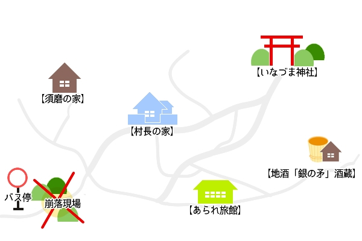

1．はじめに
このシナリオは現代日本を舞台としている。ある村で行われている鬼会(鬼追い)神事について調べているうちに、クトゥルフ要素と出会ってしまう、というような内容になる。
戦闘は基本起きない、探索中心のシナリオである。呪文や神話生物に独自設定が含まれる。
情報の文章量が多いので、情報整理がちょっと大変かもしれない。
・推奨人数：2～4名
・プレイ時間：8時間程度
・本文：
・推奨職業：特になし
・推奨技能：〈目星〉〈聞き耳〉〈図書館〉〈オカルト〉
交渉系技能（〈言いくるめ〉〈説得〉〈信用〉等）もあると便利。
[備考]
ステータスについて：INTは、高めである探索者が一人でもいると、講義情報が取得しやすい。
職業について：「将来なる予定のもの」という解釈で、探索者作成時には、PLが自由に職業を選ぶこと・年齢最低値ルールは考慮しないことを想定している。 探索者にリアリティを求めたい・学生探索者を使いたいなど、こだわりある場合はKP裁量でシナリオ調整してほしい。（講義内容の難易度など）
◇ 補足
・内容・表現に関して
鬼追い神事・お祭り自体は実在しているが、各地方村々で内容も細部異なる。今回の村は架空のものであり、内容・解釈に関しても創作要素が含まれる。留意されたし。
「鬼会」はこのシナリオ中「おにおい」と読むが、実際は「おにえ」と読まれる場合が多い。
・「麻呂太郎の講義」について
初日と二日目に一回ずつ計二回、1回あたり90分の講義がある。サボり・欠席も可。
講義を受けた探索者は、講義内容がどれだけ理解できたかの判定を行う。
[判定方法]
講義内容である、シナリオに関わる各情報には【難易度】が設定されている。
探索者は、自身のINTと情報に設定された【難易度】とで、情報毎に対抗ロールを行う。成功した場合、その情報が公開される。
2．KP向け情報
何もかもを恨んだ狂人は、すべてを壊すために外なる世界の邪神を呼び出した。探索者は、生きてこの村を出ることができるのか。
このシナリオのクリア条件は、生きて村から脱出すること である。
シャビス＝カを退散せしめる鬼会の儀は、探索者が行わずとも、残った村人たちで行われる。しかしその場合、多大な犠牲がでることとなる。
◇ 村の『カミ』について
村では土着の『カミ』として、「鬼」と「巫女」の二柱を祀っている。
「鬼」は雷の神、「巫女」は豊穣の神とされており、この二柱は夫婦だといわれている。
鬼、雷の正体はヨグ=ソトース
巫女、妻の正体はシュブ=ニグラス。
かつてこの村に、人間の女性に変身したシュブ=ニグラスが神社の「巫女」として暮らしていた。人間に変身すると、脳まで人間のものになるので、感情を持ち思考も人間レベルに制限されるのだが、彼女は角を残しており、人でない思考も持っていた。
ヨグ=ソトースの迎えに応じたのはそのためである。彼女は、人間へ変身したときに抱いた村人たちへの同情で、村に豊穣をもたらした。
シュブ=ニグラスが「巫女」として村で暮らしていた時、彼女は村の男性との間で子をもうけている。現在の八木家がその子孫である。姿かたち、機能は人間となんら変わらない存在だ。
◇ 作中の呪文について
【『鬼』を呼ぶ言葉】は発音補助の呪文である。
ヨグ・ソトースに縁ある地でこの呪文を唱えると、唱えた者は「ヨグ・ソトース」を正しく発音する。
正名を呼んだ者に、ヨグ・ソトースは『返事』をする。これは、言葉として何か返すというわけではない。唱えた者の側にある、目印になるもの(大きな木や尖った銀製のものなど)に彼の片鱗を顕わすのである。
あくまで「片鱗を顕わす」のであり、本人が現れる（＝召喚される）わけではない。
また、目印になるものがなければ、ヨグ・ソトースが『返事』をしても、唱えた者はそれに気付くことができない。
[補足]……「顕わす」という語
見えなかったものが見えるようになるという語。ヨグ・ソトースの性質を考えた時、見えていないだけで常に存在するとでもいうべきところがあったため。
このシナリオのクリア条件は、
シャビス＝カを退散せしめる鬼会の儀は、探索者が行わずとも、残った村人たちで行われる。しかしその場合、多大な犠牲がでることとなる。
◇ 村の『カミ』について
村では土着の『カミ』として、「鬼」と「巫女」の二柱を祀っている。
「鬼」は雷の神、「巫女」は豊穣の神とされており、この二柱は夫婦だといわれている。
鬼、雷の正体はヨグ=ソトース
巫女、妻の正体はシュブ=ニグラス。
かつてこの村に、人間の女性に変身したシュブ=ニグラスが神社の「巫女」として暮らしていた。人間に変身すると、脳まで人間のものになるので、感情を持ち思考も人間レベルに制限されるのだが、彼女は角を残しており、人でない思考も持っていた。
ヨグ=ソトースの迎えに応じたのはそのためである。彼女は、人間へ変身したときに抱いた村人たちへの同情で、村に豊穣をもたらした。
シュブ=ニグラスが「巫女」として村で暮らしていた時、彼女は村の男性との間で子をもうけている。現在の八木家がその子孫である。姿かたち、機能は人間となんら変わらない存在だ。
◇ 作中の呪文について
【『鬼』を呼ぶ言葉】は発音補助の呪文である。
ヨグ・ソトースに縁ある地でこの呪文を唱えると、唱えた者は「ヨグ・ソトース」を正しく発音する。
正名を呼んだ者に、ヨグ・ソトースは『返事』をする。これは、言葉として何か返すというわけではない。唱えた者の側にある、目印になるもの(大きな木や尖った銀製のものなど)に彼の片鱗を顕わすのである。
あくまで「片鱗を顕わす」のであり、本人が現れる（＝召喚される）わけではない。
また、目印になるものがなければ、ヨグ・ソトースが『返事』をしても、唱えた者はそれに気付くことができない。
[補足]……「顕わす」という語
見えなかったものが見えるようになるという語。ヨグ・ソトースの性質を考えた時、見えていないだけで常に存在するとでもいうべきところがあったため。
簡易時系列
| ◆1日目 | かみなり村到着 | |
| 村長の話・講義1 | ||
| 21:00 | 「鬼会」の儀(中止) | |
| 須磨、神社の裏で召喚 | ||
| 召喚を見ていた村長死亡、調子に乗った須磨死亡 | ||
| 2日目 | 講義2 | |
| 燐失踪 | ||
| 3日目昼 | シナリオリミット |
▼ 旅のしおり【予定表】
これは、事前に麻呂太郎から探索者達に配布されたものという体で、PLに配布する。| ・一日目 | ||
| 14：00 | 村に到着 「あられ旅館」に宿泊 | |
| 15：00 | 村長の話 | |
| 16：00 | 講義 第一回『祭』 | |
| 17：30 | 講義終 自由行動（～21時まで） | |
| 19：00 | お祭りが始まる時間。賑わいだすのは20時頃から | |
| 21：00 | 「鬼会」の儀(見学必須、30分ほど) | |
| これを見たら好きなときに旅館に戻ってよい。 | ||
| 麻呂太郎曰く、「羽目を外しすぎないように」 | ||
| ・二日目 | ||
| 09：00 | 講義 第二回『よりまし・よりしろ』 | |
| 10：30 | 講義終 自由行動 | |
| 18：00 | 夕食（旅館で） | |
| ・最終日 | ||
| 13：30 | バス停へ。これを逃すと翌日までバスはない。 | |
| ・連絡事項 | ||
| 初日に夕飯はついていません。お祭りの屋台で適当に買って食べてください。 携帯電話は圏外になるようです。自宅などに電話を掛ける際は、旅館のものを借りるように。 基本、僕は調査に同行しません。旅館にいるので、何かあればすぐ報告するように。 以上。 |
||
3．主要NPC
(キャラ付けは進行具合やお好みで適当に変更してください)
・八木 燐（やぎ・りん）
神社の一人娘。巫女。ツインテール。
・霰屋 虎吉（あられや・とらきち）
旅館の息子。ッス！
・此村 龍司（このむら・りゅうじ）
村長さんちの亡くなった娘夫婦が遺した一人息子。要は村長の孫。
・霰屋 カメ子（あられや・かめこ）
旧姓は八木。虎吉と燐の祖母。
・須磨（すま）
元大学教授。平安時代の王朝物語、特に『源氏物語』の研究をしていた。
現在は無職。亡くなった両親の遺した家でひとり暮らし。歌が下手。
・藤原 麻呂太郎（ふじわら・まろたろう）
大学教授。平安時代の文学を研究している。専門は『夜半の寝覚』だが、他の作品にも手を出している。好きなことには研究熱心だが、そうでないものには無関心。興味のあるものの話をさせると長い。
『源氏物語』の登場人物なら、六条御息所と空蝉と落葉の宮が好き。未亡人ばっかじゃねーか！
◇ 講義外の麻呂太郎について
今回の鬼会神事は、基本的に学生たちの自主性に任せ調査させている。なるべく学生だけで調査し考えてほしいという思いがあるため、探索要員にはあまり使えない。知識提供は積極的にしてくれる。
虎吉と燐は従妹同士。龍司と燐は許嫁。龍司、燐、虎吉は同い年の幼馴染。
https://jxsnwk.github.io/wakamura/COC/5/img/keizu.jpg
・八木 燐（やぎ・りん）
神社の一人娘。巫女。ツインテール。
・霰屋 虎吉（あられや・とらきち）
旅館の息子。ッス！
・此村 龍司（このむら・りゅうじ）
村長さんちの亡くなった娘夫婦が遺した一人息子。要は村長の孫。
・霰屋 カメ子（あられや・かめこ）
旧姓は八木。虎吉と燐の祖母。
・須磨（すま）
元大学教授。平安時代の王朝物語、特に『源氏物語』の研究をしていた。
現在は無職。亡くなった両親の遺した家でひとり暮らし。歌が下手。
・藤原 麻呂太郎（ふじわら・まろたろう）
大学教授。平安時代の文学を研究している。専門は『夜半の寝覚』だが、他の作品にも手を出している。好きなことには研究熱心だが、そうでないものには無関心。興味のあるものの話をさせると長い。
『源氏物語』の登場人物なら、六条御息所と空蝉と落葉の宮が好き。未亡人ばっかじゃねーか！
◇ 講義外の麻呂太郎について
今回の鬼会神事は、基本的に学生たちの自主性に任せ調査させている。なるべく学生だけで調査し考えてほしいという思いがあるため、探索要員にはあまり使えない。知識提供は積極的にしてくれる。
人物家系図
これがないと分かりにくいと思って。折を見てPLにも公開するといいかもしれない。虎吉と燐は従妹同士。龍司と燐は許嫁。龍司、燐、虎吉は同い年の幼馴染。
https://jxsnwk.github.io/wakamura/COC/5/img/keizu.jpg
4．導入
国文学科麻呂太郎ゼミの生徒である探索者たちは、今回「かみなり祭」で行われる『神事』の一種である『鬼会（おにおい）』を見学に、藤原麻呂太郎と共に上鳴村（かみなりむら）を訪れる。
祭りは初日の晩、帰るのは三日目の昼ごろになる。
行きのバスに乗っているのは探索者たちだけ。到着したバス停には申し訳程度の寂れたベンチがある。
ここから、徒歩20分ほどかけて今回の旅の宿・あられ旅館に向かうことになる。
※補足
ゼミ生でない探索者がシナリオに参加いただいても良い。（同じバスに乗ることになる）
その場合、鬼会神事に興味がある探索者、ゼミ生や麻呂太郎と知り合いである探索者などが関わりやすいだろう。
「麻呂太郎の講義」について、麻呂太郎は興味の姿勢がある者であれば、外部者も快く受け入れる。
[上鳴村（かみなりむら）]
・祭
・かみなり祭り
・鬼会（おにおい）
※ 祭・神事
ここでは、祭り全体を指す言葉を「祭」、祭りで行われる儀式を「神事」としている。
「祭」そのものも儀式の一種であるので、混同せぬよう注意されたし。
祭りは初日の晩、帰るのは三日目の昼ごろになる。
行きのバスに乗っているのは探索者たちだけ。到着したバス停には申し訳程度の寂れたベンチがある。
ここから、徒歩20分ほどかけて今回の旅の宿・あられ旅館に向かうことになる。
※補足
ゼミ生でない探索者がシナリオに参加いただいても良い。（同じバスに乗ることになる）
その場合、鬼会神事に興味がある探索者、ゼミ生や麻呂太郎と知り合いである探索者などが関わりやすいだろう。
「麻呂太郎の講義」について、麻呂太郎は興味の姿勢がある者であれば、外部者も快く受け入れる。
▼ 事前情報
村に行く前に、麻呂太郎に質問するなどして知ることができる。[上鳴村（かみなりむら）]
人口約150人程の村。山奥の片田舎。村に通じる道は一本、近くのバス停までは村長さんちから歩いて30分ほど。
田園広がる土地。水が綺麗で地酒も美味しい。
Q.どうしてこの村にしたの？
田舎ほど、昔の物が昔の形のまま残っていやすいので。超田舎な村にしたよ！
あと地酒が飲みたかったよ！
・お勧めの観光スポット
観光らしい観光のできる場所はないが、自然豊かで山に囲まれた田園風景は、これでもかというくらい緑であるらしい。
この村の主要施設という意味では「村長の家」「神社」がある。その他となると、地酒を作っている小さな酒蔵があるとかなんとか。
田園広がる土地。水が綺麗で地酒も美味しい。
Q.どうしてこの村にしたの？
田舎ほど、昔の物が昔の形のまま残っていやすいので。超田舎な村にしたよ！
あと地酒が飲みたかったよ！
・お勧めの観光スポット
観光らしい観光のできる場所はないが、自然豊かで山に囲まれた田園風景は、これでもかというくらい緑であるらしい。
この村の主要施設という意味では「村長の家」「神社」がある。その他となると、地酒を作っている小さな酒蔵があるとかなんとか。
・祭
神仏あるいは祖霊を祀る儀式。祭には、ある手順とやらがあるようだが…。
より詳細を知るならば、麻呂太郎の講義を受けるのがいいだろう。
より詳細を知るならば、麻呂太郎の講義を受けるのがいいだろう。
・かみなり祭り
上鳴村で行われているお祭り。
より詳細を知るならば、現地で調べるのがよいだろう。
より詳細を知るならば、現地で調べるのがよいだろう。
・鬼会（おにおい）
鬼追いとも書く。祭りで行われる神事の一種である。各地に多くあるのは「鬼を追い払う」という内容の、節分のような神事であるのだが、この村の鬼会は「鬼に会い、わざと鬼を怒らせ、鬼に厄を追い出してもらう」という内容である。
より詳細を知るならば、現地人に聞くのがいいだろう。
より詳細を知るならば、現地人に聞くのがいいだろう。
※ 祭・神事
ここでは、祭り全体を指す言葉を「祭」、祭りで行われる儀式を「神事」としている。
「祭」そのものも儀式の一種であるので、混同せぬよう注意されたし。
5．探索
▼ マップ類
↑ 村の地図
https://jxsnwk.github.io/wakamura/COC/5/img/map.jpg

↑ 村の地図（KP向け）
https://jxsnwk.github.io/wakamura/COC/5/img/kpmap.jpg
1日目
[この日の主な出来事]村長の話を聞き、講義を受けたのち、祭りの会場へ向かう。鬼会の儀の見学中、異変が起きる。
[この日の探索想定箇所]
・あられ旅館
・いなづま神社
（・村長の家）
（・地酒「銀の矛」酒蔵）
PLが行く場所に詰まっているようであれば、KP側から提示するといいかもしれない。
【あられ旅館】
旅館に訪れると、背丈170cmほどの活発そうな少年が部屋の案内に出てくる。
◇ 霰屋虎吉（あられや・とらきち）
宿泊する部屋に案内される間、探索者は旅館のいたるところに様々な人形が飾られているのを目にする。
・人形
精巧なビスクドールから手作りのようなぬいぐるみまでその種類は様々。どれも人間の人形、女の子を模したものが多い。動物の人形は見かけない。
・人形について、虎吉
「ああそれ。カメ子おばあちゃんの趣味なんすよ」
・おばあちゃん
虎吉の父方の祖母。名前はカメ子。虎吉曰く、「大好きなおばーちゃんっす!」とのこと。
いつも旅館の離れの庭の縁側で日向ぼっこしているらしい。
・お饅頭
人の顔を模したお饅頭のようで、デフォルメされた鬼と女性の2種類あるようだ。どちらの顔も表情はにこにこ。
・お饅頭について、虎吉
「このお饅頭、神社でも売ってるんで！ よかったら買っていってください！」
お饅頭の形について訊ねると、以下のようなことを言う。
・その他
旅館の他の部屋に宿泊者はいない。村自体に泊まりで人が来るのが珍しい。大抵が日帰りか、親戚の家に泊まるかするのが常なのだとか。
旅館、と名がついてはいるが、村長から「村に滞在したい人が来る」と知らされたときにしか営業されていない。元々、村の役職のひとつに、村の客人をもてなすというものがあり、霰屋家はそれを一家代々担ってきていた、その名残らしい。
この日向ぼっこしている老婦人は虎吉の祖母、カメ子である。
探索者が話しかけると、ゆったりとした語調で言葉を返す。質問にも、彼女の知っていることなら答えてくれる。
◇ カメ子おばあちゃん
・膝の上の人形について
昔々に母に作ってもらった人形だという。カメ子の姉・ツル子の持っていた人形とペアになっている。大事な大事な人形。
「ツル子お姉ちゃんのお人形さんは、もうなくなってしもうたんやけれどね」
・旅館にある、たくさんの人形について
探索者がその人形たちについて尋ねると、どこか昔を思い出すように、カメ子は語りはじめる。
カメ子には、もう亡くなってしまったが、ツル子という一つ上の年の姉がいた。
ツル子は、昔「鬼に嫁に連れていかれ」そうになったのだという。
今から60年ほど前、祭りの次の日。カメ子と一緒に遊んでいたツル子は、忽然と姿を消してしまった。
そこで老婦人は目を細く開いて、どこか意地悪っぽく笑う。その瞳は、子供のような光を宿している。
それからカメ子は人形を集めているという。もし誰かがつれていかれそうになっても、代わりに連れてってもらえるように、と。
・「鬼に嫁に連れて行かれる」とは
いわゆる神隠しのようなもの。
この村の神様は鬼と巫女さん。鬼はお祭りのとき、きちんと奉げものをして怒りを鎮めないと村の成人前の女の子を一人、お嫁に連れていってしまうのだという。多くの村人が、このことを信じている。
・ツル子の、なくなった人形
何処に行ったかはわからない。カメ子の膝の上の人形とペアのものだった。
ツル子のお気に入りで、ツル子はいつも人形を自分と同じ髪型にして、おそろいの髪飾りをつけていた。
・その後のツル子
村の他所にお嫁に行った。夫とはらぶらぶ、子にも恵まれ幸せに暮らしたそうな。
死因は老衰。穏やかな死に顔だったらしい。
◇カメ子の人形のどれかを、借りたいもしくは譲渡してほしいと探索者がカメ子に申し出る。
カメ子は、目的がそれらしいものであれば快く許可する。全て持っていかれるのは困るが、いくつかなら構わないという。
燐の身代わりに使うという目的であり、そのことをカメ子に話していた場合、
話を聞いたカメ子は、膝の上に置いていた自分の大事な人形を探索者に渡してくれる。
人形を渡したカメ子は、探索者たちに優しく微笑んで、日向ぼっこを再開する。
◇ 霰屋虎吉（あられや・とらきち）
「うす！ 虎吉っす！ 藤原ゼミのみなさんっすね！」
「よろしくおねがいしまっす！」
年齢は18歳。高校三年生。趣味はドラム型洗濯機でまわる洗濯物をながめること。チョー楽しいっす！
「よろしくおねがいしまっす！」
年齢は18歳。高校三年生。趣味はドラム型洗濯機でまわる洗濯物をながめること。チョー楽しいっす！
宿泊する部屋に案内される間、探索者は
・
精巧なビスクドールから手作りのようなぬいぐるみまでその種類は様々。どれも人間の人形、女の子を模したものが多い。動物の人形は見かけない。
・
「ああそれ。カメ子おばあちゃんの趣味なんすよ」
・
虎吉の父方の祖母。名前はカメ子。虎吉曰く、「大好きなおばーちゃんっす!」とのこと。
いつも旅館の離れの庭の縁側で日向ぼっこしているらしい。
部屋
男女別・案内されて、お饅頭とお茶をだしてもらえる。・
人の顔を模したお饅頭のようで、デフォルメされた鬼と女性の2種類あるようだ。どちらの顔も表情はにこにこ。
・
「このお饅頭、神社でも売ってるんで！ よかったら買っていってください！」
お饅頭の形について訊ねると、以下のようなことを言う。
「んー、鬼と、巫女さんっす！」
「鬼は鬼っす。巫女さんは、神社の巫女さん。うちの村の神社の神様が、この二人なんすよ」
「あっ、今の巫女さんじゃなくて、昔の巫女さんっす！」
それ以上のこととなると、虎吉の説明は要領を得ない。「鬼は鬼っす。巫女さんは、神社の巫女さん。うちの村の神社の神様が、この二人なんすよ」
「あっ、今の巫女さんじゃなくて、昔の巫女さんっす！」
・その他
旅館の他の部屋に宿泊者はいない。村自体に泊まりで人が来るのが珍しい。大抵が日帰りか、親戚の家に泊まるかするのが常なのだとか。
旅館、と名がついてはいるが、村長から「村に滞在したい人が来る」と知らされたときにしか営業されていない。元々、村の役職のひとつに、村の客人をもてなすというものがあり、霰屋家はそれを一家代々担ってきていた、その名残らしい。
旅館の離れの庭の縁側
老婦人が日向ぼっこしている。老婦人は、古そうな布の人形を膝の上に抱えている。目は閉じて、もごもご口を動かしている。この日向ぼっこしている老婦人は虎吉の祖母、カメ子である。
探索者が話しかけると、ゆったりとした語調で言葉を返す。質問にも、彼女の知っていることなら答えてくれる。
◇ カメ子おばあちゃん
・
昔々に母に作ってもらった人形だという。カメ子の姉・ツル子の持っていた人形とペアになっている。大事な大事な人形。
「ツル子お姉ちゃんのお人形さんは、もうなくなってしもうたんやけれどね」
・
探索者がその人形たちについて尋ねると、どこか昔を思い出すように、カメ子は語りはじめる。
カメ子には、もう亡くなってしまったが、ツル子という一つ上の年の姉がいた。
ツル子は、昔「鬼に嫁に連れていかれ」そうになったのだという。
今から60年ほど前、祭りの次の日。カメ子と一緒に遊んでいたツル子は、忽然と姿を消してしまった。
「村人総出で捜してもみつからんで、もうあかんと思うた時、どこからか泣き声がきこえてね。大人たちと一緒にみにいったら、おねえちゃんやった」
「『怖かったねえ』って、大人達は泣いてるおねえちゃんを慰めたんやけど、おねえちゃん、別に怖くて泣いとったんとちゃうんやて。いなくなるとき 持ってたおにんぎょさんがのうなった(なくなった)って泣いとんのん」
「大人たちみいんな、あきれたと同時にほっとしてね。もう大笑いよ」
「おねえちゃんは、なんで笑われとんのかも分からんから、べそかいて、しばらく大人たちと口きかんかったん」
「『怖かったねえ』って、大人達は泣いてるおねえちゃんを慰めたんやけど、おねえちゃん、別に怖くて泣いとったんとちゃうんやて。いなくなるとき 持ってたおにんぎょさんがのうなった(なくなった)って泣いとんのん」
「大人たちみいんな、あきれたと同時にほっとしてね。もう大笑いよ」
「おねえちゃんは、なんで笑われとんのかも分からんから、べそかいて、しばらく大人たちと口きかんかったん」
そこで老婦人は目を細く開いて、どこか意地悪っぽく笑う。その瞳は、子供のような光を宿している。
「その時ね、私にだけお姉ちゃんがこっそり教えてくれたんよ。『お人形は失くしたんやのうて、おにいさんにとられたんや』と」
「後から思うと、お人形さんがおねえちゃんのかわりに、そのおにいさん――神様にもっていかれたんかなあて。私はそう、思うんよ」
「後から思うと、お人形さんがおねえちゃんのかわりに、そのおにいさん――神様にもっていかれたんかなあて。私はそう、思うんよ」
それからカメ子は人形を集めているという。もし誰かがつれていかれそうになっても、代わりに連れてってもらえるように、と。
・
いわゆる神隠しのようなもの。
この村の神様は鬼と巫女さん。鬼はお祭りのとき、きちんと奉げものをして怒りを鎮めないと村の成人前の女の子を一人、お嫁に連れていってしまうのだという。多くの村人が、このことを信じている。
・
何処に行ったかはわからない。カメ子の膝の上の人形とペアのものだった。
ツル子のお気に入りで、ツル子はいつも人形を自分と同じ髪型にして、おそろいの髪飾りをつけていた。
・
村の他所にお嫁に行った。夫とはらぶらぶ、子にも恵まれ幸せに暮らしたそうな。
死因は老衰。穏やかな死に顔だったらしい。
◇
カメ子は、目的がそれらしいものであれば快く許可する。全て持っていかれるのは困るが、いくつかなら構わないという。
燐の身代わりに使うという目的であり、そのことをカメ子に話していた場合、
話を聞いたカメ子は、膝の上に置いていた自分の大事な人形を探索者に渡してくれる。
「まあ、まあ」
「おねえちゃんのお気に入りのおにんぎょさんね。おねえちゃん、いつもおにんぎょさんの髪型と髪飾り、自分とおそろいにしとったから、その子も同じように、おそろいの髪にするといいかもねえ」
「おねえちゃんのお気に入りのおにんぎょさんね。おねえちゃん、いつもおにんぎょさんの髪型と髪飾り、自分とおそろいにしとったから、その子も同じように、おそろいの髪にするといいかもねえ」
人形を渡したカメ子は、探索者たちに優しく微笑んで、日向ぼっこを再開する。
・ 村長の話
◇ 村長・此村 治（このむら・おさむ）
村の名前は、昔この村に雷がたくさん降ったから、であったり、昔村にいた巫女が神に嫁入りして神になった(＝神成り)から、であったり、諸説あるがはっきりしたことは分かっていない。
昔々のそのまた昔、この村が不作と流行り病で悩まされていた頃、「鬼」が妻を求めてこの村に訪れた。村がこれに応じずにいると、「鬼」は怒り、村に数多の雷を降らせた。村人たちは尚一層悩み苦しみ、「鬼」におびえる日々を送った。
ある一人の村娘が、これを憂い、自ら「鬼」の妻となった。「鬼」の怒りはおさまり、大喜びで雷を降らせるのを止め、村人たちの病までもを治してしまった。
その後、「鬼」は妻となった村娘と力を合わせて村の不作を解消し、村に豊穣をもたらした。村人たちは喜び、「鬼」とその妻に感謝し、その夫婦二人を『カミ』として祀るようになった。
「かみなり祭」は、この出来事から始まったといわれている。
妻となった村娘は、当時のいなづま神社の巫女だったという。
また、「鬼」の妻となった巫女には村の男との間にもうけた子がいたらしい。神社の神主や巫女はその子供の系譜である。
この「鬼」は、村人たちにとって、拝む対象でありながら、おそれる対象でもある。
鬼の怒りが村に向くことは避けたいが、鬼の力にはあやかりたいのである。
現在では祭りの供物は酒や菓子だが、実際に人を奉げていた時代もあったときいている。また、供物を忘れたり、不十分であると、成人前の少女が「神隠し」のようなものにあう例もあるらしい。
これを村では「鬼に嫁入りする」と表現する。
！ 現実に、村長は、虎吉の祖母（カメ子）の姉・ツル子が、「鬼に嫁入りし」かけたという噂をきいたことがある。
その人物は、一応は無事だったらしいが……。
！ 供物の量や種類は毎年異なり、また、供物が充分かどうかの判断は、いつも神主がしている。
供物の量は「鬼」のさじ加減であり、神主他、巫女の血を引く者には、なんとなく「鬼」が何を求めているのかが分かるらしい。天啓のような、第六感とでもいうようなものが知らせる、とかなんとかいわれている。
・巫女の血を引く者
村にいるのは、神主、燐、カメ子、虎吉父（獅子丸）、虎吉。
この村の鬼会は「鬼に会い、わざと鬼を怒らせ、鬼に厄を追い出してもらう」という内容である。
古く、病気は霊的なものが祟り罹るものだと考えられていた。そこから転じ、この「鬼」は厄を追い払うものになったのだと思われる。
鬼は、【鉾（ほこ）を持った白鬼】と【大松明を持った赤鬼】の二人。
白鬼と赤鬼を、松明を持った村人数人で追い回し、村人の掛け声や柱に松明を打ち付けるなど、音を立てて怒らせる。いくらか追い回したところで赤鬼と村人たちは松明の火を消す。消えた松明の煙充満する中を、二人の鬼は退場する、という流れである。
村長は話が終わると、探索者達に何か質問がないか尋ねる。村長は、自分の分かる範囲で探索者達の質問に答える。
虎吉の祖母（カメ子）の姉・ツル子が「鬼に嫁入りし」かけた件については、詳細はわからないので、気になるようならカメ子に尋ねてくれという。
村長の家には、村の資料や、鬼会の詳しい手順を書いた資料もあるらしい。
・村長の孫
名は龍司というらしい。虎吉の友人。
・探索者が虎吉に、龍司について訊ねると、
虎吉と同い年であること、虎吉の従妹である神社の巫女・燐(りん)と恋仲であること、真面目でしっかりしており、少々お堅い性格であることを教えてくれる。
◇ 麻呂太郎のうんちく。
・雷と「鬼」
・雷と怒り
「私が村長です」
かみなり村について
地酒が美味しいので、探索者たちにも一度は飲んでほしい、とのこと。祭りでも屋台を出しているようだ。村の名前は、昔この村に雷がたくさん降ったから、であったり、昔村にいた巫女が神に嫁入りして神になった(＝神成り)から、であったり、諸説あるがはっきりしたことは分かっていない。
かみなり祭について
いつから続いているともわからない「祭」である。昔々のそのまた昔、この村が不作と流行り病で悩まされていた頃、「鬼」が妻を求めてこの村に訪れた。村がこれに応じずにいると、「鬼」は怒り、村に数多の雷を降らせた。村人たちは尚一層悩み苦しみ、「鬼」におびえる日々を送った。
ある一人の村娘が、これを憂い、自ら「鬼」の妻となった。「鬼」の怒りはおさまり、大喜びで雷を降らせるのを止め、村人たちの病までもを治してしまった。
その後、「鬼」は妻となった村娘と力を合わせて村の不作を解消し、村に豊穣をもたらした。村人たちは喜び、「鬼」とその妻に感謝し、その夫婦二人を『カミ』として祀るようになった。
「かみなり祭」は、この出来事から始まったといわれている。
妻となった村娘は、当時のいなづま神社の巫女だったという。
また、「鬼」の妻となった巫女には村の男との間にもうけた子がいたらしい。神社の神主や巫女はその子供の系譜である。
この「鬼」は、村人たちにとって、拝む対象でありながら、おそれる対象でもある。
鬼の怒りが村に向くことは避けたいが、鬼の力にはあやかりたいのである。
祭りの伝承に関して
「鬼」の妻となる、というのは生贄を意味しているともとれる。現在では祭りの供物は酒や菓子だが、実際に人を奉げていた時代もあったときいている。また、供物を忘れたり、不十分であると、成人前の少女が「神隠し」のようなものにあう例もあるらしい。
これを村では「鬼に嫁入りする」と表現する。
！ 現実に、村長は、虎吉の祖母（カメ子）の姉・ツル子が、「鬼に嫁入りし」かけたという噂をきいたことがある。
その人物は、一応は無事だったらしいが……。
！ 供物の量や種類は毎年異なり、また、供物が充分かどうかの判断は、いつも神主がしている。
供物の量は「鬼」のさじ加減であり、神主他、巫女の血を引く者には、なんとなく「鬼」が何を求めているのかが分かるらしい。天啓のような、第六感とでもいうようなものが知らせる、とかなんとかいわれている。
・巫女の血を引く者
村にいるのは、神主、燐、カメ子、虎吉父（獅子丸）、虎吉。
鬼会（おにおい）
祭りで行われる神事の一種である。いなづま神社境内の舞殿で行われる。この村の鬼会は「鬼に会い、わざと鬼を怒らせ、鬼に厄を追い出してもらう」という内容である。
古く、病気は霊的なものが祟り罹るものだと考えられていた。そこから転じ、この「鬼」は厄を追い払うものになったのだと思われる。
鬼は、【鉾（ほこ）を持った白鬼】と【大松明を持った赤鬼】の二人。
白鬼と赤鬼を、松明を持った村人数人で追い回し、村人の掛け声や柱に松明を打ち付けるなど、音を立てて怒らせる。いくらか追い回したところで赤鬼と村人たちは松明の火を消す。消えた松明の煙充満する中を、二人の鬼は退場する、という流れである。
村長は話が終わると、探索者達に何か質問がないか尋ねる。村長は、自分の分かる範囲で探索者達の質問に答える。
虎吉の祖母（カメ子）の姉・ツル子が「鬼に嫁入りし」かけた件については、詳細はわからないので、気になるようならカメ子に尋ねてくれという。
「また、何か気になることでもあれば、気軽に家まで来て頂いて構いませんぞ。私が居なくとも、孫に対応するよう言っておきましょう」
村長の家には、村の資料や、鬼会の詳しい手順を書いた資料もあるらしい。
・
名は龍司というらしい。虎吉の友人。
・
虎吉と同い年であること、虎吉の従妹である神社の巫女・燐(りん)と恋仲であること、真面目でしっかりしており、少々お堅い性格であることを教えてくれる。
◇ 麻呂太郎のうんちく。
・
「雷神というのはしばしば鬼のような形相でえがかれるよね。その「鬼」は雷神だったのかもしれないね。」
・
「人が怒鳴って叱るのを、『雷が落ちる』だなんて形容するだろう。雷は、怒りの感情と何か縁があるのかもね」
「まあ、いかにも怒ってますって感じの音だもんね、あのごろごろーとかぴしゃって音はさ。人が天の怒りだと錯覚するのも無理ないよ」
「まあ、いかにも怒ってますって感じの音だもんね、あのごろごろーとかぴしゃって音はさ。人が天の怒りだと錯覚するのも無理ないよ」
・ 講義1
一日目16時開始。
INTと【】内の難易度を対抗ロールする。成功で情報取得。
・西洋オカルティズムと「祭」の相似【12】
※ ↑オカルト技能30%以上所持者は、難易度を【8】に修正する
・何故「祭」をするのか【10】
・以上のことから、鬼会という儀式を考える【14】
・その他・備考（判定不要）
ここでは便宜上、その祀るものを『カミ』と呼ぶ。
多くの「祭」が、①『カミ』を迎える ②『カミ』をもてなす ③『カミ』を送る、という手順で成り立っている。
①『カミ』を迎える
先祭（さきのまつり）ともよばれる。
『カミ』は普段、姿がみえず、どこにいるか分からない存在である。それをここに「呼び」、『カミ』に来て頂くのが、この『カミ』を迎えるという段階である。
②『カミ』をもてなす
神楽や太鼓など、祭りが盛り上がるところである。
本来、『カミ』をもてなすためにされる神事も、現代においては宗教的意味が薄れ、娯楽性が重視されがちである。
③『カミ』を送る
後祭（あとのまつり）ともよばれる。祭という儀式の締めくくりである。
『カミ』にお帰り頂く、という段階なのだが、忘れられがちであり、行わない・省略されるようになった場合が多い。
また、宴を催す、集会をすることは「サバト」に共通している。「サバト」では、度々霊的存在が呼び出されたという。
「祭」と「サバト」の違いは、その祀るもの/崇拝するものが、異端とされているか否かである。
注: 「サバト」とは
ヨーロッパで信じられていた、魔女あるいは悪魔崇拝の集会。
日本では、『カミ』は人に幸いをもたらす場合もあれば、害を与える場合もあると考えられてきた。「祭」は、この害を避けるために行われることもあった。
例）京都の祇園祭
疫病退散の祭である。疫病の流行る時期になる前に『カミ』を呼び、もてなしお帰り頂くことで、病魔の訪れを防ごうとした。
・「鬼会」は「かみなり祭」で行われる神事であるが、「祭」の手順そのものを模したかのような流れで構成されている。「かみなり祭」の核といってもいい。
・もてなしの一つであるはずの「鬼会」で、『カミ』である「鬼」を怒らせるというのも珍しい。わざと怒らせ、そこで鎮めるという形をとることには意味がありそうだ。
麻呂曰く、「ある程度推測はつけているが、是非一度自分で考えてみてほしい」とのこと。
（その答えについては、後述の余談「鬼会に関する麻呂の推測」参照）
・「鬼」を怒らせることでその場の厄を「祓う」、ということについて。
ただ「呼ぶ」だけでは祓えない、「怒り」が必要過程なのだとしたら。
「鬼」を怒らせることは、その「鬼」が「祓う」力を得るための過程、「鬼」の力を増大させる行為なのかもしれない。
◇ その他・備考
神社で行われる鬼追い神事が「追儺式」とよばれていることの多い中、この村の鬼追い神事は「鬼会」…鬼と会う、という。『カミ』である「鬼」と会うことに重点のある儀式なのだろうか。
◇ 麻呂太郎の余談
・「鬼」と『カミ』
「鬼」というのは元々『オン』という音で、「隠」という字でも書いた。いわゆる角の生えたあの鬼のビジュアルは後の時代になってできたものであり、本来鬼というのは目に見えず隠れているものだった。
・鬼会に関する麻呂の推測
わざと怒らせることで、「鬼」が村の意図しないところで大きな怒りを村に向ける(=災いとなる)のを防ごうとした、と考える。
・過去に神話的事象と関わったことがある
・講義1の情報を全て取得した
上記の条件にひとつでも当てはまる探索者の場合、
・〈アイデア〉の半分、あるいは〈オカルト〉成功
祭りでやっている鬼会神事が、何らかの魔術的儀式をモデルにしているものだと推量する。
▶ 正気度喪失 0/1
INTと【】内の難易度を対抗ロールする。成功で情報取得。
▼ 第一回 『祭』
・祭 【8】・西洋オカルティズムと「祭」の相似【12】
※ ↑オカルト技能30%以上所持者は、難易度を【8】に修正する
・何故「祭」をするのか【10】
・以上のことから、鬼会という儀式を考える【14】
・その他・備考（判定不要）
祭
神仏あるいは祖霊を祀る儀式。ここでは便宜上、その祀るものを『カミ』と呼ぶ。
多くの「祭」が、①『カミ』を迎える ②『カミ』をもてなす ③『カミ』を送る、という手順で成り立っている。
①『カミ』を迎える
先祭（さきのまつり）ともよばれる。
『カミ』は普段、姿がみえず、どこにいるか分からない存在である。それをここに「呼び」、『カミ』に来て頂くのが、この『カミ』を迎えるという段階である。
②『カミ』をもてなす
神楽や太鼓など、祭りが盛り上がるところである。
本来、『カミ』をもてなすためにされる神事も、現代においては宗教的意味が薄れ、娯楽性が重視されがちである。
③『カミ』を送る
後祭（あとのまつり）ともよばれる。祭という儀式の締めくくりである。
『カミ』にお帰り頂く、という段階なのだが、忘れられがちであり、行わない・省略されるようになった場合が多い。
西洋オカルティズムと「祭」の相似
霊的存在を呼び出すという点では、この「祭」というのは、「召喚術」にも似ている。また、宴を催す、集会をすることは「サバト」に共通している。「サバト」では、度々霊的存在が呼び出されたという。
「祭」と「サバト」の違いは、その祀るもの/崇拝するものが、異端とされているか否かである。
注: 「サバト」とは
ヨーロッパで信じられていた、魔女あるいは悪魔崇拝の集会。
何故「祭」をするのか
原初の「祭」は、豊穣への感謝・祈りであったといわれている。日本では、『カミ』は人に幸いをもたらす場合もあれば、害を与える場合もあると考えられてきた。「祭」は、この害を避けるために行われることもあった。
例）京都の祇園祭
疫病退散の祭である。疫病の流行る時期になる前に『カミ』を呼び、もてなしお帰り頂くことで、病魔の訪れを防ごうとした。
以上のことから
以上のことから、鬼会という儀式を考える。・「鬼会」は「かみなり祭」で行われる神事であるが、「祭」の手順そのものを模したかのような流れで構成されている。「かみなり祭」の核といってもいい。
・もてなしの一つであるはずの「鬼会」で、『カミ』である「鬼」を怒らせるというのも珍しい。わざと怒らせ、そこで鎮めるという形をとることには意味がありそうだ。
麻呂曰く、「ある程度推測はつけているが、是非一度自分で考えてみてほしい」とのこと。
（その答えについては、後述の余談「鬼会に関する麻呂の推測」参照）
・「鬼」を怒らせることでその場の厄を「祓う」、ということについて。
ただ「呼ぶ」だけでは祓えない、「怒り」が必要過程なのだとしたら。
「鬼」を怒らせることは、その「鬼」が「祓う」力を得るための過程、「鬼」の力を増大させる行為なのかもしれない。
◇ その他・備考
神社で行われる鬼追い神事が「追儺式」とよばれていることの多い中、この村の鬼追い神事は「鬼会」…鬼と会う、という。『カミ』である「鬼」と会うことに重点のある儀式なのだろうか。
◇ 麻呂太郎の余談
・
「鬼」というのは元々『オン』という音で、「隠」という字でも書いた。いわゆる角の生えたあの鬼のビジュアルは後の時代になってできたものであり、本来鬼というのは目に見えず隠れているものだった。
「これを聞いて思い出さないかい？」
いつもは姿を現さない、というのは『カミ』とも共通している。「鬼」が『カミ』と同一視されることは何らおかしなことではない。・
わざと怒らせることで、「鬼」が村の意図しないところで大きな怒りを村に向ける(=災いとなる)のを防ごうとした、と考える。
「ガス抜きみたいなものだったんじゃないかな」
・過去に神話的事象と関わったことがある
・講義1の情報を全て取得した
上記の条件にひとつでも当てはまる探索者の場合、
・
祭りでやっている鬼会神事が、何らかの魔術的儀式をモデルにしているものだと推量する。
▶ 正気度喪失 0/1
【いなづま神社】
↑ いなづま神社マップ
https://jxsnwk.github.io/wakamura/COC/5/img/jinja1.jpg
いなづま神社
神社の周りには鎮守の杜がある。
階段をあがり、石鳥居をくぐると、参道が御社までのびている。
参道の側には手水舎(ちょうずや)がある。拝殿の側には、いかにも御神木ですというような、縄を結ばれた大きな太い木がある。
社務所の側には、ツインテールの巫女がいる。
階段をあがり、石鳥居をくぐると、参道が御社までのびている。
参道の側には手水舎(ちょうずや)がある。拝殿の側には、いかにも御神木ですというような、縄を結ばれた大きな太い木がある。
社務所の側には、ツインテールの巫女がいる。
・1日目：19時までに神社に来た場合
神社は祭りの設営中のようである。神主らしき人物が、忙しそうに村人たちに指示を出している。
・1日目：19時以降に神社に来た場合
祭が始まっている。
・拝殿
お参りしてもいいのよ。
・舞殿、本殿
舞殿の横に階段がある。本殿への階段は舞殿からのびている。
あがろうとすると巫女に咎められ、参拝は拝殿でするように言われる。
舞殿は神様と交信する者の、本殿は神様の領域なため、参拝客が立ち入ってはいけないらしい。
・社務所
神主は、基本的にここにいる。祭り中は祭りの指揮で、神社内の他の場所にいることも。
お守りやお饅頭、お酒が売っている。おみくじもここで引ける。
「お守り」…… 学業成就のお守りと、健康祈願、恋愛成就のお守りが売られている。
「かみなり饅頭」…… 一袋四個入り、手作り感の溢れる包装がされている。
「銀の鉾（ほこ）」…… 地酒。1本1800ml。
「おみくじ」…… 1回100円。場合によってはシナリオのヒントをここでだしてもよい
◇ 神主さんもしくは巫女さんにきけること
・
一応、雷と豊穣の神、というので火雷天神(菅原道真)と、クシナダヒメが祭神とされている。
尤も、村にその信仰は根付いておらず、土着の『カミ』である「鬼」とその妻である「巫女」が、この神社の『カミ』として祀られ、信仰されている。
この二人が神社に祀られるようになる前の神社についてのことは伝わっていない。
・
詳細は伝わっていないが、太陽だとか雷のような強い光をその身にまとっていたという。
・
巫女は鬼に嫁入りしたことで神となったといわれている。巫女には角が生えていたという言い伝えがある。
探索者がこれらのことを神社の参拝客などに尋ねた場合、「神主さんや巫女の燐ちゃんの方が、そういうことには詳しいだろう」と言い、神主は祭りの運営に忙しいだろうからと、巫女である燐に話を聞くことを勧める。（燐への誘導）
◇ 祭会場に来た麻呂太郎
探索者が既に御祭神について聞いていた場合、尋ねてもいないのに何やら喋り出す。
・
神仏習合の影響で、本来祀られていた『カミ』が日本神話の神と同一視されたのち、神仏分離の影響で、祭神がその日本神話の神に置き換えられるということが起こったがために、本来祀られていた『カミ』と祭神に齟齬がでている場合がある。
尤も、大抵が置き換えられた後の日本神話の神への信仰となるところ、この村は先からの『カミ』への信仰を維持している。また、仏教の色も薄いのは僻地故というところか、大変興味深い。
・
「つま」は古くは夫を呼ぶのにもつかわれた語であった。「いなづま」というのは、「稲の夫」という意味である。
これは、稲の実ができる時期に雷が多く、稲妻が稲穂に魂を宿す(＝実をつくる)と信じられていたことから。
◇ツインテールの巫女さん
名前は八木燐(やぎ・りん)。いなづま神社の神主の娘であり、この神社の巫女である。18歳の女子高校生。
「ああ、藤原ゼミの方ですね」
「設営でゆっくりはみせられないんですけれど、よろしければ「鬼会」で使う道具、見て行かれますか?」
「設営でゆっくりはみせられないんですけれど、よろしければ「鬼会」で使う道具、見て行かれますか?」
探索者が道具見学を希望すれば、燐は探索者についてきて、案内・説明してくれる。
（見学可能時間は「鬼会」儀式前、20:30まで。それ以降は見学するとすれば翌日になる。また、その際には燐の案内はない）
「鬼会」の道具
鉾（ほこ）が一つ、鬼面が2種、松明がいくつかある。◇ 鉾（ほこ）
鉾（ほこ）先、刃物の部分は銀でできている。柄の部分には幾何学模様の装飾があしらわれている。白鬼が持つ道具である。
・〈クトゥルフ神話〉成功
その幾何学模様が「連続した時間軸と、果ての無い次元」「全ての時間と空間」を意味するものだと分かる。
◇ 面
白鬼の面と赤鬼の面がある。
白鬼は「鬼」を、赤鬼は鬼に嫁入りした巫女を意味している。
赤鬼の面は、長い角が左右に後ろ斜め向きでついている。
鬼の面をかぶる人は、村の成人男性の中から毎年くじで決められる。今年は村長の弟が赤鬼、地酒の酒蔵のご主人が白鬼。
・巫女なのに赤鬼？
「鬼」に巫女が嫁入りしたことで、巫女も人ではなくなった。その「人外であること」「『鬼』の仲間であること」を表している。
「『鬼』も鬼面なのに、巫女さんまで鬼面だなんて、ちょっとややこしいですよね！」
・〈アイデア〉＋〈知識〉成功
情報：山羊
山羊の角は後ろ斜め向きでついている。これは赤鬼の面についた角と同じだ。
赤鬼の角は巫女の角を意識されてつけられていると思われる。
・〈オカルト〉あるいは〈人類学〉成功
情報：山羊
ヤギは古くから生贄として使われることが多い。
ヨーロッパのキリスト教文化において、ヤギは"異教","悪魔"の象徴である。
他宗教・神話には山羊神というのも存在している。
例）ギリシャ神話「パーン」 エジプト神話「アモン」
◇ 松明
30cmほどの松明と、それよりひと回りほど大きい松明がある。ひと回りほど大きい松明は赤鬼が持つ道具である。
◇ 巫女さんがツインテールの理由
「うちの神様がツインテール大好きなんです」
「あっ、冗談です。いえ、嘘でもないのですけれどね」
「鬼に嫁入りした巫女さんには、山羊のような角がついていたというんです。それを模して、この神社の嫁入り前の巫女は、みんなツインテールにするんですよ」
「お祭りの時なんかは、神社にくる成人前の女の子も、だいたいみんなツインテールにしますね」
「あっ、冗談です。いえ、嘘でもないのですけれどね」
「鬼に嫁入りした巫女さんには、山羊のような角がついていたというんです。それを模して、この神社の嫁入り前の巫女は、みんなツインテールにするんですよ」
「お祭りの時なんかは、神社にくる成人前の女の子も、だいたいみんなツインテールにしますね」
・村の成人前の女の子
巫女である燐と、村長さんの弟さんの孫がいる。孫は五歳の幼女。
（村の祭りには、その他村の外からも何人かの少女が参加する）
・ かみなり祭
小規模ながらも賑やかなお祭りである。
舞殿の側で村衆が笛や太鼓を鳴らしている。ちらほらと出店もある。
女の子、とでも呼べる年頃の少女の多くが、髪を二つに結んでいる。
[備考]
その女の子の内の一人、幼女五歳は村長の孫。
村の祭りには、村の外から来た人も参加している。村に親戚がいたり、ここの神社によくお参りに来ている人。
出店
村の人たちで出しているらしい。そのため種類は少ないが、値段は手ごろである。・地酒 一杯100円 … 既にできあがっている人もちらほら。おつまみは持参しているらしい。
・わたあめ 100円 … 子供の列ができている。
・フランクフルト 100円
・いかやき 200円
・ヨーヨー釣り 100円
他、やきそばや何やら、適当にお好みで。いかやきたべたい。
須磨（すま）
祭会場にやってきた麻呂が、ぼろの白衣をまとった、不健康そうな長髪の男性に声をかける。「あれ、須磨さんじゃないですか？」
麻呂の顔を見た途端、その男性は、逃げるようにどこかにいってしまう。「あんな人じゃあなかったんだけれどなあ。」
「まあ、祭り会場にはいるだろうし、回っているうちにまた出会うかな？」
「まあ、祭り会場にはいるだろうし、回っているうちにまた出会うかな？」
須磨の家の場所は、村の人に訊けばあっさりさっくり教えてもらえる。
・須磨について（麻呂）
平安時代の王朝文学が専門の文学研究者。学会で麻呂と何度か顔を合わせたことがある。
彼のとある論文が、平安文学研究において権威ある人物一派にこきおろされ、学会を半ば追放される形になって以来、表舞台から姿を消していた。
「僕もあの一派は正直好きじゃないんだけど。自分達の論に不都合ある主張や論文がでると、集団で叩きだすんだもの」
「最近その親玉ともいえる人が亡くなって、一派の勢いもなくなってきたんだよね」
「須磨さんの論文も、最近になって見直されてきて、正しく評価されるようになってきたんだよ」
「最近その親玉ともいえる人が亡くなって、一派の勢いもなくなってきたんだよね」
「須磨さんの論文も、最近になって見直されてきて、正しく評価されるようになってきたんだよ」
須磨について、村の人などから提供される情報については、項目【須磨の家】の下の方を参照願います。
・御神木
御神木の前には、供物である酒瓶や饅頭などが置かれている。
また、鬼会の30分前～直前であれば、鬼会に用いられる鉾（ほこ）と松明も、供物とともにここに置かれている。
鬼会
そろそろ始まる、という時間になってきたところで、笛や太鼓の音が止む。それが合図だったかのように、皆舞殿の周りに集まってくる。出店の係も売り上げに鍵だけかけて、店はほったらかし。村人皆が、ここに集まっているかのようだ。
・〈目星〉成功
ぼろ白衣で目立ちそうなはずの須磨の姿が、どこにも見当たらないのに気付く。また、村長が人ごみから外れて、社の裏に向かう姿を目にする。
→ これを追いかけるのであれば、「社の裏」の項へ。
ざわめく会場に、鐘が強く何度も打ち鳴らされたかと思うと、御神木の前で神主が何か読み上げ始める。やがて暗い舞殿に、舞殿横の階段をあがって白鬼と赤鬼がゆっくりと入場する。白鬼と赤鬼は、本殿側を向いて並び立つ。
それに続いて祭のはっぴを着た村人衆数人が舞殿に上がり、舞殿内をぐるぐると回るようにして、鬼を追いかけはじめる。太鼓や鐘がどんちゃん鳴らされ、村人たち皆で「おーにこっそおーにをー」の掛け声を繰り返ししては騒ぎ立てる。
賑やかな祭りの音楽に混ざり、ごろごろと雷の音がしはじめる。ちらほらと空を見る村人たちがでてくる。
松明の火を消し、煙が舞殿内に広がりだしたとき、その場が明るくなったと同時に社の側の御神木に向かって天から光が伸び、地に響くようなすさまじい音がする。雷が落ちたのだ。間をあけず、バケツをひっくり返したかのような雨が突然に降りだす。
御神木はめきめきと大きな音をたて、社に向かって倒れるが、社の屋根に支えられるようにして地面までは落ちず、人がつぶされるようなことはない。
その場は混乱に包まれる。混乱の中、神主が鬼会は中止であることを叫び、村人達に祭の片付けは明日だと帰宅を促す。
神主は、探索者達にも帰るように言う。
探索者が残るようであれば、麻呂もその場に残る。
社の裏
鬼会の鐘の音や太鼓の音がここまで届いている。暗がりの中、祭の提灯の小さな灯の下で須磨が奇妙な歌を歌っている。側には、隠れるのに手頃そうな立て板がある。
・〈聞き耳〉成功
「神よ この世に崩壊をもたらしたまえ 神よ 我が声にこたえたまえ」という言葉が聞き取れる。不気味な旋律なのだが、歌っている須磨の歌唱技術が稚拙なためあまり怖くはない。
・立て板に〈隠れる〉
技能ロールの結果に関わらず、須磨の目の前に行かない限り、歌に集中している須磨に気付かれることはない。
成功で、後に登場するシャビス＝カに見つからずに済む。
◇ シャビス＝カ
その時、須磨の目の前におよそ人間ほどの大きさをした、オーラのような紫色の『何か』が現れた。
力、邪悪、知性といったものの雰囲気を漂わせた『それ』は、その不定型な身体にいくつも内包した、輝きを放つ塊をきらめかせている。
探索者はその輝く塊の中に、一つあるいは複数の顔らしきものをみつける。力、邪悪、知性といったものの雰囲気を漂わせた『それ』は、その不定型な身体にいくつも内包した、輝きを放つ塊をきらめかせている。
▶ 正気度喪失 1/1d20
探索者がその『何か』に釘付けになっている時。
「何をしている」と声がして、社の陰から村長が、須磨と『それ』の前に姿を現す。しかし、不定形の『何か』は、村長にそのまま覆いかぶさるようにして、村長を呑みこんでしまう。
途端、『それ』の中で村長の身体が燃え上がる。苦しむ間もなくその体は分解され、あとには村長の服と紫色の燃えがらだけが残った。
▶ 正気度喪失 0/1d6
嬉しそうに「ははははざまあああみろおおお」と笑い出す須磨。そんな須磨を『それ』は呑みこむ。
信じられないという顔を浮かべたまま、須磨の身体は燃え上がる。すぐに形を失い、後にはよれた白衣と着ていた服、そして紫色の燃えがらが残った。
▶ 正気度喪失 0/1d6
（探索者が発狂状態などで目立つ真似をした場合、先に側にいた村長と須磨を分解してから、間を開けずシャビス＝カは探索者に迫ってくる）
村長と須磨を分解した、恐るべき『それ』は、辺りを物色するように辺りを浮遊する。
この時、立て板に〈隠れる〉を失敗した探索者は、シャビス＝カに見つかる。
探索者を見つけた『それ』は、飛行し探索者に近づきながら、その体を伸ばしてくる。
触れるや否やというところで、雷がすぐ近く、御神木のあたりに落ちる。
（見つからずに済んだ場合も、雷は落ちてくる）
雷が落ちたその瞬間、『それ』は弾き飛ばされるように境内の外へと飛んでいく。間をあけず、バケツをひっくり返したかのような雨が突然に降りだした。
雨は、燃えがらになった村長と須磨、二人の身体をさらい、洗い流していく。その場には、彼らの服だけが残った。
少し離れた場所から鬼会の中止を告げる神主の声が聞こえ、人々が帰っていくのが分かる。
雨は、燃えがらになった村長と須磨、二人の身体をさらい、洗い流していく。その場には、彼らの服だけが残った。
少し離れた場所から鬼会の中止を告げる神主の声が聞こえ、人々が帰っていくのが分かる。
[余談]
須磨の崇拝に応えて現れたが、歌が気に入らなかったので分解した。
「へたくそな歌うたってんじゃねえよ！！！！！」ﾊﾞｼｰﾝ 悲しい事件だったね。
Q.シャビス＝カには、服ごと分解されるんじゃね？
A.そうなんですよ……。そうなんです。 ここでは、探索の都合上、その人がいなくなったことが後からその場に来ても分かるようにと、服を残しています。ご了承ください。シャビス＝カちゃんかわいい。
雨の中の探索
神主は、探索者に旅館へ帰ることを促す。探索者が探索を続ける場合、麻呂もその場に残る。
・御神木
ものの見事に割れ、倒れている。 御神木の側にあった供物はほとんど原形をとどめていない。無事なのは、御神木の下敷きにならずに済んだ一本の酒瓶くらいか。
◇ 社の裏
社の裏に訪れた探索者に〈聞き耳〉を求める。
〈聞き耳〉に成功した探索者は、この場の空気はどこか不浄であるような印象を受ける。
この不浄な印象は翌朝には消えている。浄化されたのである。
社の裏には服が二人分落ちている。
探索者達はそれに見覚えがある。一つは村長、もう一つは須磨の着ていたものである。
・服を漁る
須磨の白衣からは手帳が出てくる。（→ 須磨の手帳）
・服に〈目星〉成功
服には、紫色のきらきらとした灰のようなものが付着していることに気付く。それは主に服の内側、服を着た時肌の触れる部分に付着している。
・その場に〈目星〉成功
紫色のきらきらとした灰のようなものがあたりにみられる。その灰は、落ちていた服から、雨に溶け流れ出したかのようである。
・灰のようなものに〈医学〉＋〈アイデア〉成功
その灰が、もとは人であったものだという考えに至る。通常の方法では作りだせない、何やら人智を超えた特殊な力が加わり、こうなったようである。
▶ 正気度喪失 1/1d3
2日目
[この日の主な出来事]
土砂崩れにより、明日の朝まで村の外への道が通れない。講義の後、虎吉から燐が失踪したという報せが入る。
（燐の捜索、略式・鬼会の儀の実行などは探索者の任意行動。）
[この日の探索想定箇所]
（・あられ旅館）
・いなづま神社
・村長の家
（・地酒「銀の矛」酒蔵）
・須磨の家
◇ 理由を尋ねる
理由を尋ねると、従業員は困った顔で探索者に以下のことを話す。
・昨日の雨で土砂崩れが起こり、村の外に繋がる道が塞がってしまった。土砂の撤去には村の者たちで取り掛かっているが、明日の朝までかかるだろう。
・今朝（あるいは昨日）、神社の裏で村長と須磨(村人)の服が見つかった。その服の持ち主である二人の姿はどこにも見えない。二人とも、家に帰っていないらしい。
・昨日の鬼会での雷のこともあって、鬼の怒りに触れたのではないかと村人達は皆不安になっている。
また、虎吉の居場所について尋ねると、彼が神社に行ったことが聞ける。
村はしんとしている。人がいないわけではないのだが、出歩いている人は少なく感じるかもしれない。
（どうやら、土砂の撤去作業でほとんどの村人は出払っているらしい）
村の者たちが幾人か集まって話し合いをしている。そこには、村長の弟や酒蔵の主人の姿も見える。その内容は、土砂の撤去の進度であったり、祭りの後始末についてであったり、村長と須磨の捜索をどうするかについてであったり。そこに龍司の姿は見えない。
龍司について問うと、彼は虎吉と共に神社に行ったと知らされる。
・村長、須磨の失踪に関して
村長弟「前々からあの男は何かしでかすと思っていたんだ。馬鹿兄貴はそれに巻き込まれたんだろう」
・あの男って？
「須磨だ。奴のせいに決まっている。村に戻ってきて以来、奴の様子はおかしかったんだ。思えば気をちがっていたのやもしれん」
・須磨は何をしたの？
「知らん！ しかし奴のせいなのだ！ 奴がろくでもないことをしたにきまっている！」
多くの村人が、須磨は様子がおかしな人間だと認識している。
しかし、須磨も姿を消しているため、村長弟のように全てがすべて須磨のせいで起きた、とまでは思ってはいない。
須磨についての詳しくは【須磨の家】の項参照。
10時頃になると、村長弟は「こんなところで話し合いなんてしていられるか！ あの神社の巫女を鬼の嫁にいかせるぞ！」などと言い残して村長の家を出て行ってしまう。
他の人達も、土砂の撤去に村長の家を離れる。
折れた神木の撤去作業が進められている。その他、祭の片付けをしている村人がちらほら。
・神主
片づけの指揮を執っている。
・村長と須磨の失踪に関して、神主曰く
■6時頃から8時頃まで
側では、燐・龍司・虎吉が話をしている。この場にいるのはこの三人だけだ。
この三人に対し、口止めしたり、〈言いくるめ〉や〈信用〉に成功するなどすれば、紐テープの囲いの中に立ち入って調査も可能である。
・囲いの中
社の裏には服が二人分落ちている。探索者はそれに見覚えがある。一つは村長、もう一つは須磨の着ていたものである。
・服を漁る
須磨の白衣からは手帳が出てくる。（→ 須磨の手帳）
・服の側で〈目星〉成功
服には、紫色のきらきらとした灰のようなものが付着していることに気付く。それは主に服の内側、服を着た時肌の触れる部分に付着している。
昨日の雨で、神社の裏の溝には水が流れている。水の中には、紫色のきらきらとした灰のようなものが混ざっている。（その灰は、落ちていた服についているものと同じである。）
[余談]
燐「村長と須磨さん二人の服が……近くに落ちて……つまり二人とも今裸……ハッ閃いた」
龍司「馬鹿なこと言ってないで捜すぞ」
燐「けど不気味だよねえ、服だけ残ってるなんて。まるで人だけ溶けてなくなっちゃったみたい」
◇ 三人への聞き込み
・村長、須磨の失踪に関して
龍司曰く、村長は昨日祭会場に行ってから、家に帰ってきていないらしい。
燐曰く、二人が消えたのは、鬼の仕業ではない気がしている。
虎吉「ッス～！」
・消えた二人は「鬼に嫁入り」したのか
燐は倒れた神木の前を指差す。
・シャビス＝カの見た目について探索者が話し、何か知らないか問う。
燐「うちの神様は、鬼さんの方は確かに光ってはいますけれど、紫色ではないはずです」
土砂崩れにより、明日の朝まで村の外への道が通れない。講義の後、虎吉から燐が失踪したという報せが入る。
（燐の捜索、略式・鬼会の儀の実行などは探索者の任意行動。）
[この日の探索想定箇所]
（・あられ旅館）
・いなづま神社
・村長の家
（・地酒「銀の矛」酒蔵）
・須磨の家
朝の旅館の様子
旅館の従業員は、どこか緊張しているような、いかにも何かあったという表情をしている。また、虎吉の姿が見えない。◇ 理由を尋ねる
理由を尋ねると、従業員は困った顔で探索者に以下のことを話す。
・昨日の雨で土砂崩れが起こり、村の外に繋がる道が塞がってしまった。土砂の撤去には村の者たちで取り掛かっているが、明日の朝までかかるだろう。
・今朝（あるいは昨日）、神社の裏で村長と須磨(村人)の服が見つかった。その服の持ち主である二人の姿はどこにも見えない。二人とも、家に帰っていないらしい。
・昨日の鬼会での雷のこともあって、鬼の怒りに触れたのではないかと村人達は皆不安になっている。
また、虎吉の居場所について尋ねると、彼が神社に行ったことが聞ける。
村はしんとしている。人がいないわけではないのだが、出歩いている人は少なく感じるかもしれない。
（どうやら、土砂の撤去作業でほとんどの村人は出払っているらしい）
▼ 時間帯限定系イベント
【村長の家】
■6時頃から10時頃まで村の者たちが幾人か集まって話し合いをしている。そこには、村長の弟や酒蔵の主人の姿も見える。その内容は、土砂の撤去の進度であったり、祭りの後始末についてであったり、村長と須磨の捜索をどうするかについてであったり。そこに龍司の姿は見えない。
龍司について問うと、彼は虎吉と共に神社に行ったと知らされる。
・村長、須磨の失踪に関して
村長弟「前々からあの男は何かしでかすと思っていたんだ。馬鹿兄貴はそれに巻き込まれたんだろう」
・あの男って？
「須磨だ。奴のせいに決まっている。村に戻ってきて以来、奴の様子はおかしかったんだ。思えば気をちがっていたのやもしれん」
・須磨は何をしたの？
「知らん！ しかし奴のせいなのだ！ 奴がろくでもないことをしたにきまっている！」
多くの村人が、須磨は様子がおかしな人間だと認識している。
しかし、須磨も姿を消しているため、村長弟のように全てがすべて須磨のせいで起きた、とまでは思ってはいない。
須磨についての詳しくは【須磨の家】の項参照。
10時頃になると、村長弟は「こんなところで話し合いなんてしていられるか！ あの神社の巫女を鬼の嫁にいかせるぞ！」などと言い残して村長の家を出て行ってしまう。
他の人達も、土砂の撤去に村長の家を離れる。
【神社】
■6時頃から10時頃まで折れた神木の撤去作業が進められている。その他、祭の片付けをしている村人がちらほら。
・神主
片づけの指揮を執っている。
・村長と須磨の失踪に関して、神主曰く
「あれは鬼の仕業ではない。ましてや巫女の仕業でもない。忌々しくも恐ろしい外の神が来たのだ」
「これは、鬼の力を借り、祓わねばならないのだろう」
「鬼会の儀を中止にしたのは失敗だった。もう一度執り行う必要がある」
「村の外の人間からしてみれば、何を非現実的なと思うだろう。しかし、事実、『神』と呼ぶ他ない人知を超えた強大なものは存在しているのだ」
「これは、鬼の力を借り、祓わねばならないのだろう」
「鬼会の儀を中止にしたのは失敗だった。もう一度執り行う必要がある」
「村の外の人間からしてみれば、何を非現実的なと思うだろう。しかし、事実、『神』と呼ぶ他ない人知を超えた強大なものは存在しているのだ」
【神社の裏】
現場は簡易ながら紐テープで囲まれ、立ち入らないようにと張り紙がしてある。■6時頃から8時頃まで
側では、燐・龍司・虎吉が話をしている。この場にいるのはこの三人だけだ。
この三人に対し、口止めしたり、〈言いくるめ〉や〈信用〉に成功するなどすれば、紐テープの囲いの中に立ち入って調査も可能である。
・囲いの中
社の裏には服が二人分落ちている。探索者はそれに見覚えがある。一つは村長、もう一つは須磨の着ていたものである。
・服を漁る
須磨の白衣からは手帳が出てくる。（→ 須磨の手帳）
・服の側で〈目星〉成功
服には、紫色のきらきらとした灰のようなものが付着していることに気付く。それは主に服の内側、服を着た時肌の触れる部分に付着している。
昨日の雨で、神社の裏の溝には水が流れている。水の中には、紫色のきらきらとした灰のようなものが混ざっている。（その灰は、落ちていた服についているものと同じである。）
[余談]
燐「村長と須磨さん二人の服が……近くに落ちて……つまり二人とも今裸……ハッ閃いた」
龍司「馬鹿なこと言ってないで捜すぞ」
燐「けど不気味だよねえ、服だけ残ってるなんて。まるで人だけ溶けてなくなっちゃったみたい」
◇ 三人への聞き込み
・村長、須磨の失踪に関して
龍司曰く、村長は昨日祭会場に行ってから、家に帰ってきていないらしい。
燐曰く、二人が消えたのは、鬼の仕業ではない気がしている。
虎吉「ッス～！」
・消えた二人は「鬼に嫁入り」したのか
燐は倒れた神木の前を指差す。
「お供物が台無しになっちゃったんです。ですから、鬼さんは今も怒ったままだと思います。ただ、私たちの目にその姿が見えないだけで」
「村長さんや須磨さんがいなくなったのは、お嫁に連れて行かれたんではないと思います。鬼にお嫁に連れていかれるのは、女の子ばかりのはずですから」
「だから、消えるなら私」
そう言って戯けて笑ってみせる燐を、「縁起でもないこと言うな」と龍司は諌める。「村長さんや須磨さんがいなくなったのは、お嫁に連れて行かれたんではないと思います。鬼にお嫁に連れていかれるのは、女の子ばかりのはずですから」
「だから、消えるなら私」
・シャビス＝カの見た目について探索者が話し、何か知らないか問う。
燐「うちの神様は、鬼さんの方は確かに光ってはいますけれど、紫色ではないはずです」
・ 講義2
二日目9時開始。講義の始まる直前、旅館に村長の弟が訪ねてくる。
燐を知らないか探索者に問うた後、苛立たしげに旅館を去っていく。
INTと【】内の難易度を対抗ロールする。成功で情報取得。
・『カミ』の顕現（判定不要）
・よりまし・よりしろ【7】
・儀式道具の代用【10】
・『カミ』のよび方【8】
『カミ』の顕現
『カミ』は元来、人前に姿をみせることのない存在だった。その姿を見せる時が、"『カミ』が顕れる時"である。
『カミ』が顕れるためには、目印になるものや、器になるもの・腰をおろすものが必要だと考えられた。
例）神木、神輿、ノロ
よりまし・よりしろ
『カミ』の降りる"人"は「よりまし」、"もの"は「よりしろ」という。
・よりまし
巫女など。子供や処女であることが多い。
・よりしろ
木や鉾（ほこ）など、尖っているものが多い。
儀式道具の代用
人形(ひとがた)も、よりましとして扱われることがある。これは人形が、人を模したものであるからだ。形を模したものというのは、本来のそれの代用品でありながら、本来のそれの役割を果たす。
余談：饅頭の語源
人身御供として奉げられていた人の頭の代わりに、人の頭を模した、小麦粉でつくった皮で肉を包んだものを用いることになった中国の故事に由来するといわれている。
この例にあるように、代用品を用いても儀式は成立するのである。
代わりに用いるものについては、同じ形、同じ色、同じ素材など、本来のそれと 何らかの共通点や同じ性質をもっている事が求められる。
『カミ』のよび方
『カミ』を呼び出す方法は様々で、法則性もみられない。しかし、呼ぶにあたって「音を立てる」という行為はよくみられる。言葉や音楽を伴うこともある。
例）イタコの数珠、梓巫女の梓弓、祝詞(神様を賞賛する言葉)、神楽、お囃子etc...
講義が終わった頃、虎吉は旅館に戻ってきて、燐がいなくなったこと、村長の家に村長・須磨・燐の捜索本部が置かれたことを探索者達に報せる。
「大変ッス～！ 燐ちゃんも居なくなったっス！」
旅館まで虎吉と共に来た村人は、燐の捜索協力を探索者たちに要請する。
土砂崩れの撤去作業と、村長&須磨探しで、人手が足りてない様子である。（→ 燐の捜索）
燐を知らないか探索者に問うた後、苛立たしげに旅館を去っていく。
INTと【】内の難易度を対抗ロールする。成功で情報取得。
▼ 第二回 『よりまし・よりしろ』
第二回『よりまし・よりしろ』・『カミ』の顕現（判定不要）
・よりまし・よりしろ【7】
・儀式道具の代用【10】
・『カミ』のよび方【8】
『カミ』の顕現
『カミ』は元来、人前に姿をみせることのない存在だった。その姿を見せる時が、"『カミ』が顕れる時"である。『カミ』が顕れるためには、目印になるものや、器になるもの・腰をおろすものが必要だと考えられた。
例）神木、神輿、ノロ
よりまし・よりしろ
『カミ』の降りる"人"は「よりまし」、"もの"は「よりしろ」という。・よりまし
巫女など。子供や処女であることが多い。
・よりしろ
木や鉾（ほこ）など、尖っているものが多い。
儀式道具の代用
人形(ひとがた)も、よりましとして扱われることがある。これは人形が、人を模したものであるからだ。形を模したものというのは、本来のそれの代用品でありながら、本来のそれの役割を果たす。余談：饅頭の語源
人身御供として奉げられていた人の頭の代わりに、人の頭を模した、小麦粉でつくった皮で肉を包んだものを用いることになった中国の故事に由来するといわれている。
この例にあるように、代用品を用いても儀式は成立するのである。
代わりに用いるものについては、同じ形、同じ色、同じ素材など、本来のそれと 何らかの共通点や同じ性質をもっている事が求められる。
『カミ』のよび方
『カミ』を呼び出す方法は様々で、法則性もみられない。しかし、呼ぶにあたって「音を立てる」という行為はよくみられる。言葉や音楽を伴うこともある。例）イタコの数珠、梓巫女の梓弓、祝詞(神様を賞賛する言葉)、神楽、お囃子etc...
講義が終わった頃、虎吉は旅館に戻ってきて、燐がいなくなったこと、村長の家に村長・須磨・燐の捜索本部が置かれたことを探索者達に報せる。
「大変ッス～！ 燐ちゃんも居なくなったっス！」
旅館まで虎吉と共に来た村人は、燐の捜索協力を探索者たちに要請する。
土砂崩れの撤去作業と、村長&須磨探しで、人手が足りてない様子である。（→ 燐の捜索）
【村長の家】
昔は村役場として使われていたらしい屋敷。
大きな蔵がある。
[備考]
村長の奥さん(龍司の祖母)は、現在村長の娘(龍司の伯母)と二人で旅行中。村にはいない。
村長の家では、二日目の朝を除き、基本的に龍司が応対する。
村長の用意した資料
探索者が来た時のために、「鬼会の手順」と「かみなり祭の歴史」についての資料が用意されている。
これ以外の村の資料も見ることを希望した場合、資料庫に案内される。
・資料「鬼会の手順」
資料の手順は、鬼会に少なくとも十人以上が参加することを想定して書かれている。少人数で行える略式の手順もあるようだが、詳細はこの資料に書かれていない。
備考として、「鬼会には供物を用意する。用意する物に関しては、巫女の系譜の者に訊くこと」とある。
・祝詞【『鬼』を呼ぶ言葉】
つらつらと平仮名が羅列されている。古い言葉のようだ。
また、読み上げるのはいなづま神社の敷地・境内でないと効果がないという注意文が添えられている。
・祝詞に対して、〈母国語（日本語）〉あるいは〈他の言語（日本語）〉成功
その文字の羅列の意味をざっくりとると、「全てにして一つの原初、天の彼方の光よ姿を顕わせ」となることがわかる。
何かを呼ぶことを意図した言葉のようだ。
・資料「かみなり祭の歴史」
祭が始められた時代は平安時代前期。その頃の祭りでは、儀式の面が重要視されて、「鬼会」だけで祭りとして成立していた。
その儀式の内容もシンプルで、鬼役と巫女役が槍と火をつけた松明を持ち祝詞を述べるだけだったという。
資料庫
村に関する資料や記録が置いてある。
〈図書館〉成功で、「鬼会儀式記録帳」と「系図」を見つける。
・「鬼会儀式記録帳」
鬼会儀式に役を持って参加した人の名が、年ごとに記録されている。
鬼役は二人。村衆の人数は年によってまちまちで、不在の年もあった様子。その年の備考欄には、『略式で儀式を行う』とある。
毎年くじで決めているようだが、特に誰がやらなければいけないというような決まりはないらしい。
・「系図」
村長の家（此村家）と巫女の系譜（八木家）の系図がそれぞれ記録され、残されている。
四十年ほど前に、古い系図から書き直されたものらしい。劣化や虫食いなどで読み取れなかった箇所は「■■」で表されており、時代をさかのぼるほど「■■」の記号ばかりになっていく。古い系図は残っていない。
ここ三代の系図を、画像として掲載する。
https://jxsnwk.github.io/wakamura/COC/5/img/keizu2.jpg
蔵
広くて古い蔵。戸は木でできていて、外から閂をかける仕様。
先代村長さんは非常に厳しい人で、現村長や村長弟はやんちゃする度ここに折檻されていたとかなんとか。それもあって、現村長や村長弟は蔵にあまり近づきたがらないらしい。
蔵について村人に訊いた場合、そのようなことを教えてもらえる。
訊かずとも、探索者が蔵を気にしている様子であれば、その場にいた村人が自ら話すかたちで情報を公開してもよい。
[備考]
資料「鬼会の手順・略式」は燐が所持している。後の「燐の捜索」を参照。
大きな蔵がある。
[備考]
村長の奥さん(龍司の祖母)は、現在村長の娘(龍司の伯母)と二人で旅行中。村にはいない。
村長の家では、二日目の朝を除き、基本的に龍司が応対する。
村長の用意した資料
探索者が来た時のために、「鬼会の手順」と「かみなり祭の歴史」についての資料が用意されている。これ以外の村の資料も見ることを希望した場合、資料庫に案内される。
・資料「鬼会の手順」
①神主の口上。これは【『鬼』を呼ぶ言葉】である。(詳細は後述)
呼んだ『鬼』が姿を顕わす場所は、神社の神木だとされている。
②白鬼は神木の前に置かれていた鉾（ほこ）を手にとる。赤鬼は松明を手にとる。
③鬼二人が舞殿に入る。
④村人数人が舞殿に入り、鬼を追い回す。
⑤赤鬼がたいまつの火を消す。
⑥鬼二人が本殿に向かって一礼し、舞殿から退場する。
呼んだ『鬼』が姿を顕わす場所は、神社の神木だとされている。
②白鬼は神木の前に置かれていた鉾（ほこ）を手にとる。赤鬼は松明を手にとる。
③鬼二人が舞殿に入る。
④村人数人が舞殿に入り、鬼を追い回す。
⑤赤鬼がたいまつの火を消す。
⑥鬼二人が本殿に向かって一礼し、舞殿から退場する。
資料の手順は、鬼会に少なくとも十人以上が参加することを想定して書かれている。少人数で行える略式の手順もあるようだが、詳細はこの資料に書かれていない。
備考として、「鬼会には供物を用意する。用意する物に関しては、巫女の系譜の者に訊くこと」とある。
・祝詞【『鬼』を呼ぶ言葉】
つらつらと平仮名が羅列されている。古い言葉のようだ。
また、読み上げるのはいなづま神社の敷地・境内でないと効果がないという注意文が添えられている。
・祝詞に対して、〈母国語（日本語）〉あるいは〈他の言語（日本語）〉成功
その文字の羅列の意味をざっくりとると、「全てにして一つの原初、天の彼方の光よ姿を顕わせ」となることがわかる。
何かを呼ぶことを意図した言葉のようだ。
・資料「かみなり祭の歴史」
祭が始められた時代は平安時代前期。その頃の祭りでは、儀式の面が重要視されて、「鬼会」だけで祭りとして成立していた。
その儀式の内容もシンプルで、鬼役と巫女役が槍と火をつけた松明を持ち祝詞を述べるだけだったという。
資料庫
村に関する資料や記録が置いてある。〈図書館〉成功で、「鬼会儀式記録帳」と「系図」を見つける。
・「鬼会儀式記録帳」
鬼会儀式に役を持って参加した人の名が、年ごとに記録されている。
鬼役は二人。村衆の人数は年によってまちまちで、不在の年もあった様子。その年の備考欄には、『略式で儀式を行う』とある。
毎年くじで決めているようだが、特に誰がやらなければいけないというような決まりはないらしい。
・「系図」
村長の家（此村家）と巫女の系譜（八木家）の系図がそれぞれ記録され、残されている。
四十年ほど前に、古い系図から書き直されたものらしい。劣化や虫食いなどで読み取れなかった箇所は「■■」で表されており、時代をさかのぼるほど「■■」の記号ばかりになっていく。古い系図は残っていない。
ここ三代の系図を、画像として掲載する。
https://jxsnwk.github.io/wakamura/COC/5/img/keizu2.jpg
蔵
広くて古い蔵。戸は木でできていて、外から閂をかける仕様。先代村長さんは非常に厳しい人で、現村長や村長弟はやんちゃする度ここに折檻されていたとかなんとか。それもあって、現村長や村長弟は蔵にあまり近づきたがらないらしい。
蔵について村人に訊いた場合、そのようなことを教えてもらえる。
訊かずとも、探索者が蔵を気にしている様子であれば、その場にいた村人が自ら話すかたちで情報を公開してもよい。
[備考]
資料「鬼会の手順・略式」は燐が所持している。後の「燐の捜索」を参照。
【須磨の家】
二階建ての一軒家。玄関の扉はスライド式、鍵がかかっている。須磨の亡くなった両親の残した家である。
家の中にはゴミ袋が無造作に置かれている。長らく放置されているのか腐臭がする。
ゴミ袋の中身は、空き缶や空き瓶、ペットボトル、インスタント食品やレトルト食品の包装、器、食べ残し、果物などの芯や皮、何かに汚れた衣服など。分別していない。
小動物が駆け回ったり壁を引っかいたりする音がしきりに聞こえる。
この家は、ネズミのような小動物の類のたまり場になっている。ゴミ屋敷だし仕方ないね。
・客間
特に何もないよ。
・階段
埃が積もっている。
・二階
倉庫代わりにされているようである。書籍や研究資料らしきものが置かれているが、長らく使われている形跡がない。
・廊下
床にべっとりとした赤黒いものが付着している。その跡は、何かを引きずったように居間へと続いている。
◇ 居間
血なまぐさい。廊下の床の跡は、居間にある黒いビニール袋に続いている。
ビニール袋の結び目にはガムテープが貼られており、そこには油性ペンで「インク」と書かれている。
床には赤黒い何かで幾何学的な模様が描かれている。模様は床の三分の二ほどまで描かれている。途中で手を止めたかのように、赤黒い何かと筆の入った壷がテレビ台のそばに置かれている。
▶ 正気度喪失 0/1
・黒いビニール袋
ここには、アライグマの死体が数体入っている。アライグマはバラバラに刻まれている。
▶ 正気度喪失 0/1d2
・壷の中の赤黒い何か
血なまぐさい。乾燥して固まっている。
（これはアライグマの血である。）
・〈オカルト〉成功
獣の血は、時に魔術行使のための魔法陣を描くインクとして用いられることがある。
この幾何学模様は何か魔術的な意味を持っているように思われるが、オカルト界隈で知られている術式のいずれにも当てはまらないものである。
・〈知識〉成功もしくは現地の人間に訊く
アライグマは害獣。田舎にいるのは珍しいことではない。柱をかじり建物を倒壊させるなどの被害が相次いでいる。
・部屋に〈目星〉、あるいは念入りに見る・ゴミ袋を退けるなどする
天井まで届くほどに詰まれたゴミ袋に隠れて、扉があるのに気付く。
（扉の先は、下述「作業部屋？」へと続いている。）
◇ 作業部屋？
壁には黒墨のようなもので何かの記号と模様が描かれている。机が一つあり、その机には灰皿が置かれている。
・〈オカルト〉成功
記号は恒星を意味している。この模様は宇宙をあらわす図である。
・〈天文学〉成功
太陽系の恒星と記号の配置が一致する。
・机の上
灰皿に紙の束の燃え跡がある
焦げ残っている部分は何かの楽譜なのか、五線が引いてある。
[補足]
カルト集団「原初の歌」の、シャビス＝カをたたえる歌。
須磨がこのところ練習していたのがこの讃美歌。
◇ 須磨の手帳
須磨の白衣から見つかる、古びた革カバーの小さな手帳。
須磨の手記のようだ。ところどころ、ページを乱暴に千切った跡がある。
最初の方のページには、須磨の古典研究のおぼえがきらしきものがあるのだが、黒いペンでぐしゃぐしゃと塗りつぶされている。（雨にぬれ、読み取れない所が多い。）
途中から、恨みつらみが書き殴られている。
憎い。憎い。あいつらが憎い。呪ってやる。呪ってやる。俺は間違ってなどいない。
神よ我を見放したもうたか。
神などいなかった。
嫌いだ。みんな嫌いだ。村に戻ってきたところで、何のいいこともない。
何が鬼だ、巫女様だ。奴らが神だなんて、嘘っぱちだ。
・
・
（空白のページが続く。）
・
・
神はいた！ ああ、これこそが、私を救う神。
崩壊をもたらす神。永遠の汚れ(けがれ)を。
神は異界におられる。故に私は救われなかった。
神はいかにして、この世に来られるのか。
歌を歌おう、賛美の歌を。
あなたさまこそ真の神であると。
神をお招きする方法が、ついに判明した。
これで、お会いできるのですね。
時は満ちた。
今こそ救いの時。壊れろ。壊れてしまえ。
須磨について
・村人ここ数か月、須磨の家からは須磨が歌う不気味な音楽がきこえてくる。歌っているうちに多少うまくはなってきたようであるが、非常に下手な歌で近隣住民が迷惑している。
・神主
神主の2つ上の先輩。村の外の学校に進学して、就職もそこでして、ふらっと村に戻ってきたかと思えばすっかり様変わりしていた。
昔は、よく気が回って、思いやりがあり、落ち着きのある好青年だった。昔から繊細なところがあったため、それで気を病んでしまったのではないかと考えている。
[備考]
家を見たら「はいこいつアウト―！」となると思う。その通りだ。
【地酒「銀の鉾（ほこ）」酒蔵】
地酒「銀の鉾（ほこ）」が売っている。酒蔵の主人
・酒の名前について「銀の鉾（ほこ）」という名前は、鬼会の白鬼が持っている鉾（ほこ）からきている。
元々、この銀の鉾（ほこ）は“鬼”の持ち物ではなく、“鬼”を呼ぶのに使う道具の模倣品であるとかなんとかの話を聞いたことがある。
買ったお酒を自宅郵送する場合、この場で手配できる。
[備考]
ヨグ＝ソトースとの邂逅を試みるときに使うのは、銀の鉾（ほこ）ではなく銀の鍵。
・地酒「銀の鉾（ほこ）」
清酒。飲み口はさらっとしている。かおりがいい。
神社での儀式や、その他鬼会の供物にも用いられる酒。
・成分表示に対して〈知識〉半分あるいは〈薬学〉成功
ごく一般的な酒の成分が表記されている。表記におかしなところはない。
・清酒について〈知識〉成功（〈オカルト〉技能30％以上所持者は自動成功）
清酒はお清めやお祓いに用いられることがある。不浄なものを退けるという効果があり、体内に取り込む（飲む）ことで内側の穢れを祓い、その場に撒くことで場を清めるとされている。
[余談]
それはそれとして、西洋魔術だとお酒飲んで頭のネジをとばした状態で魔術を行使するみたいなのあるよね。お酒飲んでるところは共通しているのに、全然神聖な感じしないというか黒魔術感ある気がする。黄金の蜂蜜酒。飲んでも飲まれるな。
6．燐の捜索
・捜索本部について探索者たちが講義を受けている間に組織された。村長の家に設置されている。
指揮は最初、村長の弟がとっていたのだが、いてもたってもいられなくなったらしく、燐を探しに捜索本部を出ていってしまった。それを皮切りに、その場にいた村人たちも思い思いの場所に探しにいってしまった。現在本部には龍司が残っている。
村長・須磨・燐の捜索のためとされているが、燐の捜索に一番力がいれられているらしい。土砂の撤去に村人の大半が行っているので、大した人数ではなく、捜索は難航している。
・村長の弟が燐を探したい理由
村長の弟にはまだ幼い孫がいる。村長の弟には、その孫が可愛くてたまらない。
鬼会の儀で“鬼”に嫁入りするのは、決まって成人前の少女であり、村長の弟は孫が連れて行かれてしまうことを恐れている。
[補足]
現在村にいる成人前の少女は五人。うち、三人が昨日の祭りで村に来た少女。あとの二人は村の人間である燐と村長の弟の孫。 過去、供物を忘れたり不十分であったりした際、消えた少女は六歳が多い。
このことは、神主や村人たちに尋ねれば、苦々しげに答えてくれることだろう。
・村長や須磨の失踪は“鬼”のせいなのか？
村人たちは、男が連れていかれたことなどなかったから、鬼は随分怒っているのではないかと考えている。鬼のせいだと疑ってもいない様子である。
（このとき、それを虎吉が聞いていれば、村人たちの言葉に眉根を寄せる。彼は巫女の血筋であり、村長や須磨の失踪が鬼のせいではないと知っている。）
◇ 虎吉
「どうか、よろしくお願いしますっス！」
ここから、燐を捜索する探索者達に虎吉が同行する。
・燐を最後に見たのはいつ？
今朝の8時ごろ。神社で分かれたっきり。
その後、龍司と三人で集まる予定だったのが、約束の時間になっても現れず、神社にもいなかった。
・燐の居場所に心当たりはない？
虎吉「な、無いっスよ～？ ホントっす」
そう言いながらも、目が泳いでいる。
↑〈心理学〉成功
燐の居場所を知ったうえで、事情があって隠しているように感じた。
・居場所知ってるよね？ 言ってよ、教えてよ
虎吉「ししし、知らないんスってば！ 知ってても言えないっす！」
虎吉が燐の居場所を知っていると、探索者達にバレたと虎吉が確信していた場合、「どうしても言えないんス！」の一点張り。何やら事情がありそうだ。
[補足]
燐の居場所に関する、核心に迫るような発言があると、虎吉は周りの目を気にするような様子を見せる。
村長弟が鬼の怒りを治めるのに、燐を「鬼に嫁入り」させる気らしい。この状況で虎吉は、燐の居場所を知られるわけにはいかないと考えている。
社務所から出てくるのは村長弟。そのまま彼は孫娘を連れて村の外へ出ていこうとする。
社務所には、頭を抱えている神主がいる。
[備考]
探索者が燐を発見した時点では、村長弟はこの場を立ち去り済み。
・神主
村長の去っていった方向を見ながら、神主は村長弟が燐を供物に鬼の怒りをおさめようとしていることを述べる。鬼の怒りはこのままにしておけるものではなく、供物を用意し、鬼会の儀をもう一度執り行う必要があるという。
社務所には鬼会関連資料が置かれている。
・鬼会関連資料
祝詞【『鬼』を呼ぶ言葉】が書かれている。
（詳細は「村長の家」参照。平仮名の羅列は、村長の家にある資料と同じものである）
また、補足として次のことが書き加えられている。
・「鬼会の手順・略式」の具体的な手順について
神主曰く、昨日社務所に置いていたはずのその資料がいつの間にか無くなっていたらしい。資料の行方は知れない。
神主は燐が持って行ってしまったのかもしれないと考えている。
探索者が蔵の方へ近付こうとすると、龍司はそれとなく別の場所に行かせようとする。何か隠しているような様子が伺えるかもしれない。
蔵には燐がいる。（→ 下述、「燐との合流」参照）
シャビス＝カの姿を目撃した探索者は▶ 正気度喪失 1/1d20
！ 呑みこまれかけている人間を助けるという選択
以下に例を示す。それ以外の方法で助けられるかはKPの判断にお任せする。
・シャビス＝カの興味を、呑みこまれかけている人間から逸らす。
・襲われかけている人間が呑み込まれる前にシャビス＝カの中に何かものを突っ込む。
シャビス＝カは突っ込まれたものの分解を優先するため、逃げる猶予ができる。生物・無生物を問わないが、あまりに小さなものでは時間稼ぎにならないだろう。
・地酒「銀の鉾」をシャビス＝カにかける。
シャビス＝カは祓いの効果を持つこの地酒を嫌い、その場を逃げていく。以降、その場所にシャビス＝カが立ち寄ることはない。
龍司と虎吉が彼女を匿っている。
・燐の居場所が、村長の家の蔵だと探索者に明らかになった
・探索者（あるいはPL）が、虎吉は燐の居場所を知っていると確信した上で、村人の目のない場所で、虎吉に対して〈信用〉あるいは〈説得〉または〈言いくるめ〉に成功する。
・虎吉に好意的に接してきた探索者が、虎吉は燐の居場所を知っていると確信した上で、村人の目のない場所で、燐の居場所を村人に明かさないことを約束してから聞き出す。
上記の状況のいずれかに当てはまったとき、虎吉は観念し、探索者達に嘘を吐いたことを謝る。それから、龍司と協力して燐を匿っていたことを明かし、事情を説明するべく探索者達を燐のいる村長の家の蔵に案内する。
昨夜、鬼会の儀が中断され、『鬼』の怒りは鎮められることのないままとなっている。このままでは村に災いが降りかねない。
怒りを鎮めるためにも、もう一度鬼会の儀を執り行う必要があるのだが、怒っている『鬼』はいつもの奉げものでは満足できないらしく、少女をひとり御所望らしい。
今までの村での出来事から推測するに、この奉げものとして連れて行かれる少女は、巫女の血を引く燐である可能性が非常に高い。
龍司は、燐を連れて行かれたくなかったのだと零す。鬼会の儀を遅らせ、あわよくば村から逃亡しようと、この蔵に匿っていた。
『鬼』に嫁に連れて行かれるのは、きまってかみなり村内にいる成人前の女の子なのだと、燐から補足が入る。
一通りの事情の説明が済んだところで、龍司らは探索者に事情の秘匿を願う。
また、龍司と燐は明日の朝、村の外への道がひらけ次第、村から逃亡する予定であるという。可能であるなら、探索者たちに逃亡の手伝いをしてほしいらしい。
[補足]
虎吉が原因で探索者達に燐の居場所が露見してしまった場合、「謝る虎吉に龍司は頭の痛そうな顔をして、諦めたように事情を語りだす」みたいなかたちをとると場面を繋ぎやすいかもしれない。
説明するのはもっぱら龍司。たまに虎吉が同意を示し、燐から補足が入る。
燐は龍司と離れたくない。しかし、村を見捨てて自分たちだけが助かるのはだめだとも思っている。自分一人が犠牲になることで村が救われるなら、その方がいいんじゃないのかな、なんてことも考えるけれど、そんなのいやだと言ってくれる龍司や虎吉の存在があるものだから、結論が出せない。
龍司は燐を犠牲にはしたくない。何としても燐を助けたい。犠牲もやむなし、手段を選ぶ気はあんまりない。
虎吉は、龍司と燐がともに朗らかに過ごしていける未来が欲しい。自分は村に残るつもりでいる。それが二人に協力した自分の責任の果たし方だと考えている節がある。
◇ 燐
・不浄のもの（紫のもやもや）について
神社の神様ではない。鬼会の儀をやりなおせば、怒りを鎮めた『鬼』が祓ってくれることだろう、とのこと。
探索者から「鬼会の手順・略式」の話題が出るか、折を見て燐の方から「神社に行く機会があれば社務所に返しておいてほしい」と探索者に頼むかたちで、次の資料を探索者に渡す。
・資料「鬼会の手順・略式」
[補足]
舞殿を出るまでが儀式。⑤は呼び出した『カミ』にお帰り頂く段階。
蔵を捜せば、小柄な人間ひとりを運べる程度の大きさの荷台を見つけることができる。乗せたものを隠すには、不自然に見えない程度に布をかぶせるなど、別の手段を講じる必要がある。
村内を燐と移動する際使用することで、村人たちから燐を隠しておきやすくなることだろう。
◇ 鬼会の儀の実行
燐が犠牲にならずに鬼会の儀が実行できる可能性を探索者が提示した場合、燐や虎吉は鬼会の儀の実行に協力的になる。渋る龍司はきっと燐が説得してくれる。（→ 「鬼会」の儀）
◇ 逃亡の手引き
龍司と燐の逃亡を手伝う場合、燐たちが村の外に出る段階で探索者が村人たちの気を引く、探索者達が帰る際の荷に紛れるなどの方法がとれるだろう。後者の場合、龍司は村を発つ探索者たちを見送るふりをして燐と合流するかたちになる。
このほか、PLからの提案などで、KPが可能と判断したものを方法として採用して構わない。
・探索者が翌日昼までに燐を見つけられなかった、あるいは、探索者が逃亡に協力しなかった場合
村を出て行こうとしていた村長弟とその孫が、逃亡しようとしていた龍司と燐を発見する。村長弟は、探索者のあずかり知らぬところで、儀式「鬼会」を遂行する。燐は『鬼』に嫁入りする。
多分邪魔をしようとした村人数名や神主や龍司も死ぬ。
・龍司と燐の逃亡が成功した場合
神主が鬼会の儀を遂行する。村長弟の孫が『鬼』に嫁入りする。
「どうか、よろしくお願いしますっス！」
ここから、燐を捜索する探索者達に虎吉が同行する。
・燐を最後に見たのはいつ？
今朝の8時ごろ。神社で分かれたっきり。
その後、龍司と三人で集まる予定だったのが、約束の時間になっても現れず、神社にもいなかった。
・燐の居場所に心当たりはない？
虎吉「な、無いっスよ～？ ホントっす」
そう言いながらも、目が泳いでいる。
↑〈心理学〉成功
燐の居場所を知ったうえで、事情があって隠しているように感じた。
・居場所知ってるよね？ 言ってよ、教えてよ
虎吉「ししし、知らないんスってば！ 知ってても言えないっす！」
虎吉が燐の居場所を知っていると、探索者達にバレたと虎吉が確信していた場合、「どうしても言えないんス！」の一点張り。何やら事情がありそうだ。
[補足]
燐の居場所に関する、核心に迫るような発言があると、虎吉は周りの目を気にするような様子を見せる。
村長弟が鬼の怒りを治めるのに、燐を「鬼に嫁入り」させる気らしい。この状況で虎吉は、燐の居場所を知られるわけにはいかないと考えている。
【いなづま神社】
社務所から、男性二人の言い合う声がする。
「いいからさっさと鬼を呼べ！ 鬼会の儀を完遂しろ」
「それは分かっている。鬼をもって邪を祓う……鬼の力を借りるしか、ないのだろう。しかし」
「もう知らん！ こんな村にいられるか！ わしはこの村を出ていくぞ！」
「それは分かっている。鬼をもって邪を祓う……鬼の力を借りるしか、ないのだろう。しかし」
「もう知らん！ こんな村にいられるか！ わしはこの村を出ていくぞ！」
社務所から出てくるのは村長弟。そのまま彼は孫娘を連れて村の外へ出ていこうとする。
社務所には、頭を抱えている神主がいる。
[備考]
探索者が燐を発見した時点では、村長弟はこの場を立ち去り済み。
・神主
「奴はうちの娘を犠牲にしようというんだ……」
村長の去っていった方向を見ながら、神主は村長弟が燐を供物に鬼の怒りをおさめようとしていることを述べる。鬼の怒りはこのままにしておけるものではなく、供物を用意し、鬼会の儀をもう一度執り行う必要があるという。
「いくら神職にある身だとしても、人の親ですよ！ 平気なわけないでしょう！
あの子の身代わりになれるのなら、なってもいい。けどね、うちの神様は少女趣味だ。攫われるのは決まって年の若い女の子、私では代わりになれない」
「あの村長弟には孫が居てね、彼も自分が割を食いたくないのだろう」
あの子の身代わりになれるのなら、なってもいい。けどね、うちの神様は少女趣味だ。攫われるのは決まって年の若い女の子、私では代わりになれない」
「あの村長弟には孫が居てね、彼も自分が割を食いたくないのだろう」
社務所には鬼会関連資料が置かれている。
・鬼会関連資料
祝詞【『鬼』を呼ぶ言葉】が書かれている。
（詳細は「村長の家」参照。平仮名の羅列は、村長の家にある資料と同じものである）
また、補足として次のことが書き加えられている。
・もし少人数で儀式を行う場合は、略式でもって行うこと
・松明の火は儀式を終える際、必ず巫女役が消すこと。これが『鬼』への合図になる。
・舞殿から退場するまでが鬼会の儀
・松明の火は儀式を終える際、必ず巫女役が消すこと。これが『鬼』への合図になる。
・舞殿から退場するまでが鬼会の儀
・「鬼会の手順・略式」の具体的な手順について
神主曰く、昨日社務所に置いていたはずのその資料がいつの間にか無くなっていたらしい。資料の行方は知れない。
神主は燐が持って行ってしまったのかもしれないと考えている。
【村長の家】
行方不明である須磨・村長・燐の捜索本部が設置されている。いるのは龍司だけである。探索者が蔵の方へ近付こうとすると、龍司はそれとなく別の場所に行かせようとする。何か隠しているような様子が伺えるかもしれない。
蔵には燐がいる。（→ 下述、「燐との合流」参照）
【須磨の家】
この段階で須磨の家に向かうと、家の側で村人を呑み込もうとしているシャビス＝カと遭遇する。シャビス＝カの姿を目撃した探索者は▶ 正気度喪失 1/1d20
！ 呑みこまれかけている人間を助けるという選択
以下に例を示す。それ以外の方法で助けられるかはKPの判断にお任せする。
・シャビス＝カの興味を、呑みこまれかけている人間から逸らす。
・襲われかけている人間が呑み込まれる前にシャビス＝カの中に何かものを突っ込む。
シャビス＝カは突っ込まれたものの分解を優先するため、逃げる猶予ができる。生物・無生物を問わないが、あまりに小さなものでは時間稼ぎにならないだろう。
・地酒「銀の鉾」をシャビス＝カにかける。
シャビス＝カは祓いの効果を持つこの地酒を嫌い、その場を逃げていく。以降、その場所にシャビス＝カが立ち寄ることはない。
▼ 燐の居場所
燐は村長の家の蔵にいる。村長弟が近付きにくい場所だからである。龍司と虎吉が彼女を匿っている。
・燐の居場所が、村長の家の蔵だと探索者に明らかになった
・探索者（あるいはPL）が、虎吉は燐の居場所を知っていると確信した上で、村人の目のない場所で、虎吉に対して〈信用〉あるいは〈説得〉または〈言いくるめ〉に成功する。
・虎吉に好意的に接してきた探索者が、虎吉は燐の居場所を知っていると確信した上で、村人の目のない場所で、燐の居場所を村人に明かさないことを約束してから聞き出す。
上記の状況のいずれかに当てはまったとき、虎吉は観念し、探索者達に嘘を吐いたことを謝る。それから、龍司と協力して燐を匿っていたことを明かし、事情を説明するべく探索者達を燐のいる村長の家の蔵に案内する。
燐との合流
村長の家の蔵にて、龍司らは探索者達に事情を明かす。昨夜、鬼会の儀が中断され、『鬼』の怒りは鎮められることのないままとなっている。このままでは村に災いが降りかねない。
怒りを鎮めるためにも、もう一度鬼会の儀を執り行う必要があるのだが、怒っている『鬼』はいつもの奉げものでは満足できないらしく、少女をひとり御所望らしい。
今までの村での出来事から推測するに、この奉げものとして連れて行かれる少女は、巫女の血を引く燐である可能性が非常に高い。
龍司は、燐を連れて行かれたくなかったのだと零す。鬼会の儀を遅らせ、あわよくば村から逃亡しようと、この蔵に匿っていた。
『鬼』に嫁に連れて行かれるのは、きまってかみなり村内にいる成人前の女の子なのだと、燐から補足が入る。
一通りの事情の説明が済んだところで、龍司らは探索者に事情の秘匿を願う。
また、龍司と燐は明日の朝、村の外への道がひらけ次第、村から逃亡する予定であるという。可能であるなら、探索者たちに逃亡の手伝いをしてほしいらしい。
[補足]
虎吉が原因で探索者達に燐の居場所が露見してしまった場合、「謝る虎吉に龍司は頭の痛そうな顔をして、諦めたように事情を語りだす」みたいなかたちをとると場面を繋ぎやすいかもしれない。
説明するのはもっぱら龍司。たまに虎吉が同意を示し、燐から補足が入る。
燐は龍司と離れたくない。しかし、村を見捨てて自分たちだけが助かるのはだめだとも思っている。自分一人が犠牲になることで村が救われるなら、その方がいいんじゃないのかな、なんてことも考えるけれど、そんなのいやだと言ってくれる龍司や虎吉の存在があるものだから、結論が出せない。
龍司は燐を犠牲にはしたくない。何としても燐を助けたい。犠牲もやむなし、手段を選ぶ気はあんまりない。
虎吉は、龍司と燐がともに朗らかに過ごしていける未来が欲しい。自分は村に残るつもりでいる。それが二人に協力した自分の責任の果たし方だと考えている節がある。
◇ 燐
「せっかくのご旅行だったのに、大変なことに巻き込んでしまってすみません」
「村の雰囲気もよくありません。どうやら、不浄のものがいるようですね。出歩くのは危険です」
「神様が怒っていることもあります。……ご無理はなさらないでくださいね」
「村の雰囲気もよくありません。どうやら、不浄のものがいるようですね。出歩くのは危険です」
「神様が怒っていることもあります。……ご無理はなさらないでくださいね」
・不浄のもの（紫のもやもや）について
神社の神様ではない。鬼会の儀をやりなおせば、怒りを鎮めた『鬼』が祓ってくれることだろう、とのこと。
探索者から「鬼会の手順・略式」の話題が出るか、折を見て燐の方から「神社に行く機会があれば社務所に返しておいてほしい」と探索者に頼むかたちで、次の資料を探索者に渡す。
・資料「鬼会の手順・略式」
①鬼役が鉾（ほこ）を持ち、巫女役が火を灯した松明を持つ。
②鬼役と巫女役が舞殿に入る。
③巫女役が松明の火を消す。
④鬼会の参加者は祝詞【『鬼』を呼ぶ言葉】を唱える。
⑤鬼役と巫女役は本殿に向かって一礼し、舞殿を出る。
②鬼役と巫女役が舞殿に入る。
③巫女役が松明の火を消す。
④鬼会の参加者は祝詞【『鬼』を呼ぶ言葉】を唱える。
⑤鬼役と巫女役は本殿に向かって一礼し、舞殿を出る。
[補足]
舞殿を出るまでが儀式。⑤は呼び出した『カミ』にお帰り頂く段階。
蔵を捜せば、小柄な人間ひとりを運べる程度の大きさの荷台を見つけることができる。乗せたものを隠すには、不自然に見えない程度に布をかぶせるなど、別の手段を講じる必要がある。
村内を燐と移動する際使用することで、村人たちから燐を隠しておきやすくなることだろう。
◇ 鬼会の儀の実行
燐が犠牲にならずに鬼会の儀が実行できる可能性を探索者が提示した場合、燐や虎吉は鬼会の儀の実行に協力的になる。渋る龍司はきっと燐が説得してくれる。（→ 「鬼会」の儀）
◇ 逃亡の手引き
龍司と燐の逃亡を手伝う場合、燐たちが村の外に出る段階で探索者が村人たちの気を引く、探索者達が帰る際の荷に紛れるなどの方法がとれるだろう。後者の場合、龍司は村を発つ探索者たちを見送るふりをして燐と合流するかたちになる。
このほか、PLからの提案などで、KPが可能と判断したものを方法として採用して構わない。
・探索者が翌日昼までに燐を見つけられなかった、あるいは、探索者が逃亡に協力しなかった場合
村を出て行こうとしていた村長弟とその孫が、逃亡しようとしていた龍司と燐を発見する。村長弟は、探索者のあずかり知らぬところで、儀式「鬼会」を遂行する。燐は『鬼』に嫁入りする。
多分邪魔をしようとした村人数名や神主や龍司も死ぬ。
・龍司と燐の逃亡が成功した場合
神主が鬼会の儀を遂行する。村長弟の孫が『鬼』に嫁入りする。
7．「鬼会」の儀
以下の条件をすべて満たしたとき、【いなづま神社】に訪れると100%遭遇する・【『鬼』を呼ぶ言葉】を取得している。
・燐を発見した。
・ヨグ=ソトースの返事の憑代になる銀の鉾が神社にある。
燐の身代わりを果たすもの
燐とその身代わりをするものの共通点として、その髪型がツインテールであることが求められる。代わりに使おうとしている人形がツインテールでない場合、村の中にいる20歳未満のツインテールの少女がランダムでひとり連れて行かれる。その条件を満たすのは、探索者が特になにもしない場合、燐と村長弟の孫のみである。条件を満たす者がいなければ、鬼は怒りを鎮めない。
髪は結んでなくても、ﾋﾐｺｻﾏｰポーズも一応ツインテにカウントするよ。かたちがだいじ。
◇ 身代わりになる条件
以下の条件を満たすほど、身代わりとして連れて行かれる可能性が上がる
連れて行かれるかどうかは1d100で判定する。100%以上で自動成功。
・ひとがたである 20％
・カメ子の大事にしていた人形である 40％
・巫女の顔の饅頭である 20％
・燐の身に着けていた装飾品を人形に着けている 20％
・燐の体の一部(髪や血など)が含まれている 20％
・ツインテールにしている 40％
▼ 「鬼会」の儀の実行
資料「鬼会の手順・略式」の内容に則り儀式を進めない限り、儀式は成功しない。適宜、NPCの協力を仰いでもよい。舞殿への入退場は、拝殿からではなく、舞殿の横からのびた階段から行う。
鬼役と巫女役が舞殿に入った頃、境内内の空気が変わり、言い知れぬ悪寒が探索者達の背を走る。
現れたのは不浄の気配。――そこに『いる』。
鳥居のそばの空気が怪しく揺らめき、およそ人間ほどの大きさをした、オーラのような紫色の『何か』がそこに現れる。
『それ』は不定形に蠢きながら、舞殿の方へとゆっくり近づいていく。
鳥居のそばの空気が怪しく揺らめき、およそ人間ほどの大きさをした、オーラのような紫色の『何か』がそこに現れる。
『それ』は不定形に蠢きながら、舞殿の方へとゆっくり近づいていく。
それを直視してしまった探索者は
▶ 正気度喪失 1/1d20
本殿側を見ている場合は、背後に不気味な気配を感じるも、正気度喪失は発生しない。〈聞き耳〉成功で背後に見てはいけない何かが居ると感じる。
巫女役が松明の火を消し、舞殿に煙が充満する中、儀式の参加者たちは祝詞を唱えることになる。発狂中の者は儀式に参加できない。
・祝詞【『鬼』を呼ぶ言葉】
事前の探索で一度目を通したことがあれば、すらすらと読み上げることができる。
ここが初見である場合は、読み上げられたかどうかは、〈母国語〉-20%で判定する。
【『鬼』を呼ぶ言葉】を読み上げ終えた探索者は、精神的疲労に襲われた後、自分の口がひとりでに動こうとしているのに気付く。
MPを1d10消耗し、正気度を5減らす。
まるで何かに導かれるように、まるで真理に触れたように。自分の喉から、自分のものとは思えない、知らない発音が出る。近い音でその語を表すなら、「よぐ・そとおす」だろうか。
その語の響きに、探索者は言い知れぬ恐怖を感じる。▶ 正気度喪失 1d3/1d10
また、祝詞を唱えた探索者はクトゥルフ神話技能を4%取得する。
このとき探索者の側に銀の鉾があれば、舞殿の屋根を突き抜け、その鉾先にぴしゃんと雷が落ちてくる。探索者に被害はない。
鉾先に雷を纏ったそれは、虹色に輝き、何かの意志を宿したかのようにぶるぶると震えている。見えない力に引かれるように、鉾先が鳥居の方へ向こうとする。
鳥居の方向――もうすぐそこにまで迫った不浄のオーラの塊に鉾先を向ければ、鉾は勢いに乗って鬼役の手から飛び出し、その塊へと一直線にとんでいく。
再び雷鳴が轟き、それと同時に鉾がオーラを貫いた。
貫かれたオーラの塊は断末魔のような声を上げたあと、完全に消滅する。
しん、と鎮まりかえった境内。空気は清く澄み、張りつめている。
鉾の突き刺さったであろう場所には、まばゆく光る人型が立っている。その人型は、その場に燐がいれば、燐の方向へとゆっくりと近づいていく。
燐の身代わりを果たすものがあり、その判定に成功した場合は、燐の頭を撫でるに留め、身代わりを果たすものを腕に抱える。判定に失敗、あるいは、身替りを果たすものがない場合は燐を連れていくことになる。判定に関する詳細は、上述の「身代わりになる条件」参照。
光る人型は、鬼役と巫女役が舞殿を退場することで境内から姿を消す。
鬼会の儀の終了を受け、村は次第に平穏さを取り戻していく。村長弟や神主が事後処理に忙しくしている。
鬼会の儀を無事果たした探索者は、その後大きな事件もなく、村人たちに見送られながら村を去ることになる。
その他、エンディングは探索者の選んだ結果を受け、適宜描写をして欲しい。
8．クリア報酬
このシナリオのクリア条件は、生きて村から脱出すること である。
・シナリオをクリアした
1d10の正気度回復
・初日の鬼会神事時、神社裏に向かう村長を追いかけた
1d10の正気度回復
・お人形を燐ちゃんに似せた
1d4の正気度回復
・祝詞を唱えた
1d6の正気度回復
・燐ちゃんと村長弟の孫が無事
1d2の正気度回復
・御神木の下敷きにならずに済んだ酒瓶を、敢えて台無しにした
1d4の正気度回復
（『鬼』を怒らせた＝鬼の力を強くさせたことへの評価）
・講義に全て出席した
技能<芸術：祭>を+15%
（フレーバー技能。祭りへの造詣深さを示す）
・シナリオをクリアした
1d10の正気度回復
・初日の鬼会神事時、神社裏に向かう村長を追いかけた
1d10の正気度回復
・お人形を燐ちゃんに似せた
1d4の正気度回復
・祝詞を唱えた
1d6の正気度回復
・燐ちゃんと村長弟の孫が無事
1d2の正気度回復
・御神木の下敷きにならずに済んだ酒瓶を、敢えて台無しにした
1d4の正気度回復
（『鬼』を怒らせた＝鬼の力を強くさせたことへの評価）
・講義に全て出席した
技能<芸術：祭>を+15%
（フレーバー技能。祭りへの造詣深さを示す）
あとがき
災いをもたらす神様を、祀ることで恩恵にあやかる日本人思想が好きで。神話生物を使って神話生物を退散させるシナリオを作りたくなった結果、できたのがこれでした。
元々は講義内容から儀式手順を確定させる仕様だったのですが、さすがに遊びづらいだろうと略式手順を設けました。
作中のかみなり村は、要は邪神を信仰するカルトな風習のある村なのですけれども、それが平然とまかり通っているというちょっとした狂気も孕んでいたりしています。楽しい。
なんとも趣味を詰め込んだものになってしまいました。情報が余剰気味ですので、適宜削って遊びやすいようにしていただければと思います。文字装飾は途中で力尽きてしまったので、またそのうち修正をいれたいですね……。
元々は講義内容から儀式手順を確定させる仕様だったのですが、さすがに遊びづらいだろうと略式手順を設けました。
作中のかみなり村は、要は邪神を信仰するカルトな風習のある村なのですけれども、それが平然とまかり通っているというちょっとした狂気も孕んでいたりしています。楽しい。
なんとも趣味を詰め込んだものになってしまいました。情報が余剰気味ですので、適宜削って遊びやすいようにしていただければと思います。文字装飾は途中で力尽きてしまったので、またそのうち修正をいれたいですね……。
▽2015/08/06 up
2015/08/08 一時収納
2018/02/20 再up
2021/11/21 鬼会儀式手順一部調整・変更
「WaKaMuRa」
https://jxsnwk.github.io/wakamura/